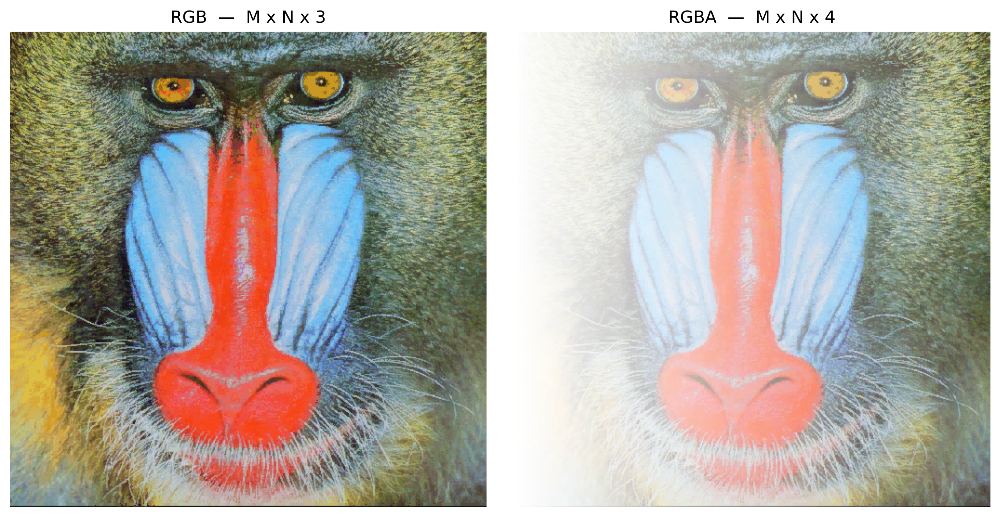
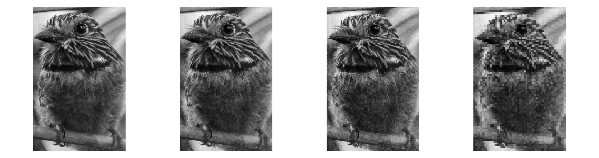
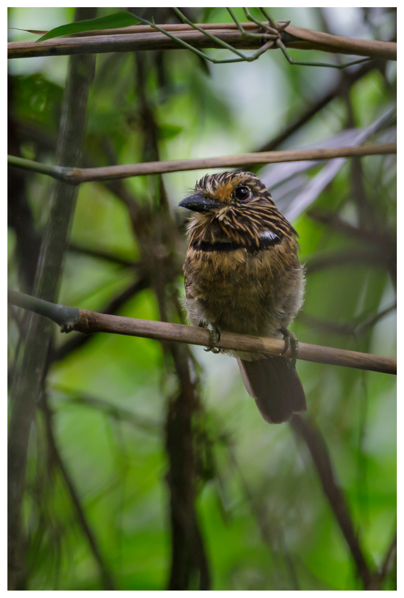

2De la Captura al Píxel - Muestreo, Cuantización y Conectividad
Este capítulo profundiza en la comprensión de la imagen digital, transitando desde la naturaleza física de la captura hasta su representación matemática discreta. Investigamos cómo la luz se convierte en dato y cómo la organización espacial de los píxeles define las relaciones de vecindad y conectividad esenciales para algoritmos avanzados de Visión por Computador (VC).
2.1 Objetivos
Al final de este capítulo, podrá:
Explicar el modelo físico de formación de la imagen basado en iluminación y reflectancia.
Diferenciar los mecanismos de la visión humana y de los sensores digitales.
Comprender los procesos de muestreo (discretización del espacio) y cuantización (discretización de la intensidad).
Describir las relaciones topológicas entre píxeles: vecindad, adyacencia, conectividad y distancias.
Realizar transformaciones geométricas básicas (traslación, rotación, escala) preservando la calidad.
Visualizar en la práctica los efectos de la variación de la resolución espacial y de la profundidad de bits.
2.2 El Ojo y la Cámara - Elementos de la Percepción Visual
La formación de una imagen digital comienza con la captura de la luz reflejada por los objetos. Como se ilustra en Figura 2.1, tanto el ojo humano como las cámaras digitales siguen principios ópticos similares para enfocar la luz sobre una superficie sensible, aunque utilizan mecanismos biológicos y electrónicos distintos para la transducción de la señal.
2.2.1 Visión humana
El ojo funciona como un sistema óptico complejo: la luz atraviesa la córnea, el humor acuoso, la pupila (controlada por el iris) y el cristalino —que ajusta el enfoque dinámicamente— hasta llegar a la retina. En la retina se encuentran los fotorreceptores: los conos (≈6 millones), concentrados en la fóvea, son responsables de la visión de colores y detalles, mientras que los bastones (≈120 millones) garantizan la visión en condiciones de baja luminosidad (visión escotópica), detectando únicamente intensidades de gris. El punto ciego es la región de donde parte el nervio óptico, carente de receptores.
2.2.2 Sensores digitales
En las cámaras, los sensores de imagen desempeñan el papel de la retina. Los dos tipos más comunes son el CCD (Charge-Coupled Device - Dispositivo de Carga Acoplada) y el CMOS (Complementary Metal-Oxide-Semiconductor - Semiconductor de Óxido Metálico Complementario). El sensor está compuesto por una matriz de fotositios (píxeles) que acumulan carga eléctrica proporcional a la luz incidente.
Para la reconstrucción de colores, se utiliza el Filtro de Bayer, una matriz de filtros de color que permite que cada píxel capture únicamente un componente de color: rojo, verde o azul (RGGB - Red, Green, Green, Blue). Posteriormente, un ADC (Analog-to-Digital Converter - Convertidor Analógico-Digital) cuantifica esa carga en valores numéricos, definidos por una profundidad de bits (p. ej.: 8 bits, lo que resulta en 256 niveles de intensidad).
NotaCuriosidad
Aunque el ojo humano tiene millones de receptores, la resolución de alta definición se restringe a la fóvea (visión central), equivalente a aproximadamente \(120 \times 120\) píxeles. La percepción de una escena completa en alta resolución es el resultado de un intenso posprocesamiento realizado por el cerebro.
Figura 2.1: Comparativo didáctico entre el sistema visual biológico y el electrónico: en la parte superior, la anatomía del ojo humano destacando la retina y los fotorreceptores (conos y bastones); debajo, la estructura de una cámara digital detallando el sensor CMOS, la matriz de filtros de Bayer (RGGB) y el proceso de cuantización digital realizado por el ADC.
2.3 Ilusiones Ópticas: Los Desafíos de la Percepción Visual
Mientras que los sensores digitales capturan la intensidad de la luz de forma lineal y objetiva, el sistema visual humano interpreta la escena basándose en el contexto, las experiencias previas y los mecanismos biológicos de supervivencia. Las ilusiones ópticas no son “errores” del ojo, sino evidencias del intenso posprocesamiento cerebral realizado en la corteza visual.
2.3.1 Ambigüedad y Contexto
El cerebro busca constantemente dar sentido a patrones ambiguos. En el ejemplo del Vaso de Rubin (ver Figura 2.2), la percepción alterna entre la figura (el vaso) y el fondo (dos rostros), demostrando que no podemos procesar ambas interpretaciones simultáneamente. Por su parte, la ilusión del Elefante de Shepard juega con nuestra incapacidad de reconciliar líneas de contorno que sugieren volumen en posiciones lógicamente imposibles.
2.3.2 Brillo y Contraste Local
Muchas ilusiones derivan de la inhibición lateral, mecanismo mediante el cual las neuronas vecinas en la retina compiten entre sí para resaltar bordes. En la Cuadrícula Scintillating, puntos oscuros “fantasma” parecen aparecer en las intersecciones blancas debido a este procesamiento local de contraste.
La ilusión de la Sombra del Tablero de Adelson es quizás la más impactante para la VC: el cuadrado “A” y el cuadrado “B” poseen exactamente el mismo valor de gris en el sensor (o archivo digital), pero el cerebro “corrige” el brillo de “B” al comprender que se encuentra bajo una sombra proyectada, percibiéndolo como más claro.
2.3.3 Geometría y Perspectiva
La percepción de profundidad puede ser engañada por construcciones geométricas que desafían la lógica tridimensional desde un ángulo de visión específico. La Escalera de Schröder utiliza la ambigüedad de la perspectiva para crear un objeto que parece ascender o descender dependiendo de cómo se observe, evidenciando cómo nuestra interpretación de “arriba” y “abajo” depende del punto de fuga.
Figura 2.2: Colección de desafíos perceptivos: (superior izquierda) Vaso de Rubin — ambigüedad figura-fondo; (superior central) Elefante de Shepard — incongruencia geométrica; (superior derecha) Sombra de Adelson — constancia de brillo basada en el contexto; (inferior izquierda) Cuadrícula de puntos — inhibición lateral; (inferior derecha) Escalera de Schröder.
2.4 El Modelo Matemático de la Formación de la Imagen
Una imagen puede modelarse como el producto de dos funciones:
\[
f(x,y) = i(x,y) \cdot r(x,y)
\tag{2.1}\]
donde:
\(i(x,y)\) es la iluminación incidente sobre la escena (energía luminosa por unidad de área), determinada por la fuente de luz;
\(r(x,y)\) es la reflectancia del objeto (fracción de la luz reflejada), determinada por las propiedades ópticas de la superficie, con \(0 < r(x,y) < 1\).
En la práctica, los dos componentes varían en escalas espaciales distintas: \(i(x,y)\) tiende a variar lentamente en el espacio, mientras que \(r(x,y)\) puede presentar variaciones abruptas asociadas a texturas, bordes y detalles finos. Las técnicas de PDI frecuentemente buscan separar o compensar estos componentes, como en métodos de corrección de iluminación no uniforme.
La Figura 2.3 ilustra cómo este modelo se manifiesta en imágenes digitales en color, representadas por múltiples canales espectrales (RGB) y, opcionalmente, por un canal adicional de transparencia (RGBA).
2.4.1 Representación Digital y Canales Espectrales
En imágenes digitales de color, la función \(f(x,y)\) de la Ecuación 2.1 se representa mediante múltiples canales espectrales. En el estándar RGB, cada píxel almacena tres muestras independientes:
donde \(A(x,y)\) representa el canal alfa (Alpha), responsable de codificar la opacidad del píxel. Por convención, el valor \(A = 0\) indica un píxel totalmente transparente, mientras que \(A = 255\) (o \(1\)) representa un píxel totalmente opaco.
Así, una imagen digital de color se estructura como una matriz multidimensional de dimensiones:
RGB:\(M \times N \times 3\)
RGBA:\(M \times N \times 4\)
en la que cada posición \((x,y)\) almacena las muestras asociadas a las propiedades ópticas de esa coordenada espacial.
La conversión entre rangos de intensidad es directa y se expresa como:
\[f_{\text{norm}}(x,y) = \frac{f(x,y)}{255}\]
donde \(f(x,y) \in [0,\,255]\) y \(f_{\text{norm}}(x,y) \in [0,\,1]\).
Convención de representación en morph.hpp: la biblioteca de este libro adopta una convención única (Tabla 2.1), sin las ambigüedades de rango y orden de canales que surgen al combinar varias bibliotecas de Python.
Tabla 2.1: Convención de representación de imágenes en morph.hpp — rango, orden de bandas, nº de canales y disposición de memoria.
La struct Image guarda los píxeles en un std::vector<unsigned char> lineal, con los campos h, w y channels. La función mm::read decodifica con stb_image forzando 3 canales (o 1, cuando grayscale=true); por lo tanto, un posible canal alfa del archivo se descarta en la lectura. Para trabajar en coma flotante, vale la misma relación \(f_{\text{norm}} = f/255\).
En la celda de ejemplo a continuación, la versión RGBA (\(M \times N \times 4\)) se construye apilando un canal alfa sintético sobre el array leído — el kernel del notebook es Python, y la visualización recibe el ndarray en ese diseño \(H \times W \times C\).
2.4.2 Preparando el Entorno Práctico
El siguiente bloque carga el módulo morph.py del repositorio y demuestra, para un píxel sintético, las diferentes convenciones de escala y orden de canales adoptadas por las principales bibliotecas de PDI.
import os, urllib.requestos.makedirs("tmp/state", exist_ok=True) # artefatos de build del camino C++ (.cpp, binario, PNGs)url ="https://raw.githubusercontent.com/fzampirolli/pdi-vc/master/morph/config.py"ifnot os.path.exists("config.py"): urllib.request.urlretrieve(url, "config.py")# El kernel es Python incluso en el camino C++: `mm` (morph.py) es usado por los# simuladores, por la exhibición de las figuras que el binario C++ genera y por el# estado mm::Image entre celdas. cpp=True descarga también el camino compilado# (morph.hpp + stb_image*.h), usado en el #include de las celdas %%writefile *.cpp.import configconfig.setup(demo=True, cpp=True)from morph import mm
2.4.3 Implementación de la Lectura de Imágenes en morph.hpp
El siguiente fragmento muestra el código fuente de la función mm::read, permitiendo verificar directamente cómo la biblioteca morph.hpp implementa la lectura de imágenes.
# A morph.hpp es header-only; a continuación, el cuerpo de la función mm::read().import re, pathlibhpp = pathlib.Path("morph.hpp").read_text()m = re.search(r"inline Image read\(.*?\n\}", hpp, re.S)print(m.group(0) if m else"(mm::read não encontrada em morph.hpp)")
inline Image read(const std::string& path_or_url, bool grayscale = false) {
std::string local_path = path_or_url;
bool is_url = path_or_url.rfind("http://", 0) == 0 ||
path_or_url.rfind("https://", 0) == 0;
if (is_url) {
local_path = "_mm_download_tmp.img";
if (!_download(path_or_url, local_path))
throw std::runtime_error("mm::read: falha ao baixar '" + path_or_url + "'");
}
int w, h, ch;
int desired = grayscale ? 1 : 3;
unsigned char* data = stbi_load(local_path.c_str(), &w, &h, &ch, desired);
if (!data) {
Image fallback;
if (_try_read_ascii_pgm(local_path, fallback)) return fallback;
throw std::runtime_error("mm::read: falha ao decodificar '" + path_or_url + "'");
}
Image img(h, w, desired);
std::copy(data, data + (size_t)w * h * desired, img.data.begin());
stbi_image_free(data);
return img;
}
2.4.4 RGB y RGBA: Ejemplo Práctico con la Imagen Mandrill
El siguiente ejemplo carga la imagen Mandrill en formato RGB, construye artificialmente un canal alfa con gradiente horizontal y muestra ambas representaciones, ilustrando concretamente las estructuras matriciales \(M \times N \times 3\) y \(M \times N \times 4\).
%%writefile tmp/fig_02_rgb_rgba.cpp#define MM_OUT "tmp/fig_02_rgb_rgba.png"// Compile with: g++-std=c++17-o program program.cpp morph.hpp//| label: fig-02-rgb-rgba//| fig-cap: "Imagem RGB (3 canais, $M \\times N \\times 3$) e versão RGBA (4 canais, $M \\times N \\times 4$) com transparência alfa gradual da esquerda para a direita. Imagem Mandrill — [USC SIPI Image Database](https://sipi.usc.edu/database/database.php?volume=misc) (domínio público)."//| echo: true#include "morph.hpp"#include <iostream>#include <vector>#include <string>#include <filesystem>int main() {// https://commons.wikimedia.org/wiki/File:Mandrill-k-means.png std::string url ="https://upload.wikimedia.org/wikipedia/commons/a/ab/Mandrill-k-means.png"; std::string caminho ="imagens/mandrill.png";// La descarga y caché se simplifica: mm::read acepta URL directamente mm::Image img_rgb = mm::read(url);// (M, N, 3), uint8// Canal alfa: gradiente horizontal 0->255 (esquerda -> direita)int h = img_rgb.h, w = img_rgb.w; mm::Image alpha(h, w);for (int x =0; x < w; x++) { unsigned char valor = (unsigned char)(int)(255* x / (w -1));for (int y =0; y < h; y++) { alpha.at(y, x) = valor; } }// Empila RGB + alfa -> RGBA (M, N, 4) mm::Image img_rgba(h, w, 4);for (int y =0; y < h; y++) {for (int x =0; x < w; x++) {for (int c =0; c <3; c++) { img_rgba.at(y, x, c) = img_rgb.at(y, x, c); } img_rgba.at(y, x, 3) = alpha.at(y, x); } } std::cout <<"RGB -> shape="<< h <<" x "<< w <<" x "<< img_rgb.channels << std::endl; std::cout <<"RGBA -> shape="<< h <<" x "<< w <<" x "<< img_rgba.channels << std::endl; mm::show(std::vector<mm::Image>{img_rgb, img_rgba}, MM_OUT, std::vector<std::string>{"RGB — M x N x 3", "RGBA — M x N x 4"}, 2);// [pdi:panel-io] auto-generated — do not edit by handstd::filesystem::create_directories("tmp");mm::write(img_rgb, "tmp/fig_02_rgb_rgba_0.png");mm::write(img_rgba, "tmp/fig_02_rgb_rgba_1.png");// [pdi:panel-io:end]return0;}
Overwriting tmp/fig_02_rgb_rgba.cpp
!g++-I. -std=c++17 tmp/fig_02_rgb_rgba.cpp -o tmp/fig_02_rgb_rgba \&& ./tmp/fig_02_rgb_rgba \&& test -f "tmp/fig_02_rgb_rgba.png"\|| echo "⚠ mm::show não gravou tmp/fig_02_rgb_rgba.png"
RGB -> shape=512 x 512 x 3
RGBA -> shape=512 x 512 x 4
[1] RGB — M x N x 3
[2] RGBA — M x N x 4
try: mm.show( [ mm.read("tmp/fig_02_rgb_rgba_0.png"), mm.read("tmp/fig_02_rgb_rgba_1.png"), ], titles=['RGB — M x N x 3','RGBA — M x N x 4', ], cols=2, )exceptExceptionas _e:print("figura indisponivel nesta trilha (C++): "+repr(_e) +" tmp/fig_02_rgb_rgba_0.png (ver a versao Python)")

Figura 2.3: Imagem RGB (3 canais, \(M \times N \times 3\)) e versão RGBA (4 canais, \(M \times N \times 4\)) com transparência alfa gradual da esquerda para a direita. Imagem Mandrill — USC SIPI Image Database (domínio público).
2.5 Digitalización: Muestreo y Cuantización
Para transformar una escena continua en una imagen digital, son necesarios dos procesos: muestreo y cuantización.
2.5.1 Muestreo - Discretización del espacio
El muestreo consiste en medir el valor de la función \(f(x,y)\) en puntos igualmente espaciados, formando una matriz de \(M\) filas (altura) y \(N\) columnas (ancho). Cada elemento de esta matriz es un píxel. La resolución espacial está dada por \(M \times N\). Cuanto mayor es la resolución, más detalles espaciales se preservan, pero también mayor es el costo computacional y de almacenamiento.
2.5.2 Cuantización - Discretización de la intensidad
La cuantización asocia a cada píxel un valor numérico discreto, generalmente representado por un entero de \(b\) bits. La profundidad de bits define el número de niveles de intensidad: \(2^b\). Las imágenes en tonos de gris suelen usar 8 bits (256 niveles). Las imágenes en color usan tres canales de 8 bits (24 bits en total).
Ilustración: Si usamos solo 1 bit por píxel (blanco y negro), perdemos todos los tonos intermedios. Con 2 bits (4 niveles) ya se perciben degradados gruesos. Con 8 bits, el ojo humano difícilmente percibe la discretización (visión continua).
AdvertenciaError de cuantización
Error de cuantización es la diferencia entre el valor analógico real y el valor discreto asignado. Se manifiesta como ruido de cuantización, visible en regiones con gradiente suave cuando se usan pocos bits.
2.5.3 Efectos del muestreo y la cuantización
Los siguientes experimentos muestran cómo la reducción de la resolución espacial (submuestreo) y de la profundidad de bits degradan la calidad visual. Utilice el código para explorar diferentes factores y niveles de gris.
%%writefile tmp/mm_out_1.cpp// Compile: g++-std=c++17-O2 -o programa programa.cpp -lm#include "morph.hpp"#include <iostream>#include <vector>#include <string>#include <filesystem>//| quarto-raw: trueint main() {// Imagem de exemplo (barbudo-rajado) — base das figuras de amostragem,// quantização e transformações geométricas deste capítulo. std::string base ="https://upload.wikimedia.org/wikipedia/commons"; std::string arquivo = ("Area_de_Prote%C3%A7%C3%A3o_Ambiental_""Quilombos_do_M%C3%A9dio_Ribeira_-_Thomas-""Fuhrmann_%282023-_02%29_Malacoptila_striata.jpg" ); std::string url = base +"/c/c5/"+ arquivo; std::string caminho ="imagens/barbudo-rajado.jpg";// El patrón de descarga/cache se colapsa a una sola llamada mm::read con la URL. mm::Image img_color = mm::read(url); mm::Image img_gray0 = mm::gray(img_color); mm::Image img_gray = mm::crop(img_gray0, 820, 1850, 890, 1550);// recorte p/ ver detalhes std::cout <<"Imagem original: ["<< img_color.h <<", "<< img_color.w <<", "<< img_color.channels <<"]\n";// img_color, img_gray0, img_gray, base, arquivo, url, caminho siguen en alcance hasta el final de main,// pero solo las mm::Image se conservan automáticamente.// [pdi:state-io] auto-generated — do not edit by handstd::filesystem::create_directories("tmp/state");mm::write(img_gray, "tmp/state/img_gray_22.png");// [pdi:state-io:end]return0;}
El experimento presentado en la Figura 2.4 ilustra el compromiso entre la resolución espacial y el costo de almacenamiento en memoria. El código utiliza la técnica de submuestreo por rebanado (slicing) para reducir la matriz original de píxeles según un factor \(f\), lo que resulta en un ahorro de memoria — por ejemplo, un factor \(f=8\) reduce el tamaño del dato en 64 veces (\(8^2\)). Para fines de comparación visual, las imágenes reducidas se restauran a las dimensiones originales (\(512 \times 512\)) mediante la interpolación por vecino más cercano (nearest). Este proceso no recupera la información perdida, pero hace evidente el efecto de aliasing y la estructura de bloques (pixelización) generada por la baja densidad de datos de la matriz muestreada.
%%writefile tmp/fig_02_subamostragem.cpp#define MM_OUT "tmp/fig_02_subamostragem.png"//| label: fig-02-subamostragem//| fig-cap: "Efeito da subamostragem. Os títulos exibem as dimensões (W x H) e o tamanho da matriz em memória (KB)."//| echo: true//| output: true#include "morph.hpp"#include <iostream>#include <vector>#include <string>// Subamostragem via fatiamento (slicing)static std::pair<mm::Image, std::string> subsample_simple(const mm::Image& image, int f) { mm::Image reduced = mm::subsample(image, f);// Cálculo de memória em KB double mem_kb = (reduced.h * reduced.w * reduced.channels) /1024.0; std::string label = std::to_string(reduced.w) +"x"+ std::to_string(reduced.h) +", "+ std::to_string((int)mem_kb) +" KB\n(Fator "+ std::to_string(f) +")";// Restaura o tamanho para visualização (H, W originais) mm::Image res = mm::resize(reduced, image.w, image.h, "nearest");return {res, label};}int main() {// [pdi:state-io] auto-generated — do not edit by handmm::Image img_gray = mm::_read_state("tmp/state/img_gray_22.png");// [pdi:state-io:end] std::vector<int> factors = {1, 4, 8, 12};// Gera os resultados e separa em listas para o mm.show std::vector<mm::Image> imgs_list; std::vector<std::string> titles_list;for (int f : factors) { auto result = subsample_simple(img_gray, f); imgs_list.push_back(result.first); titles_list.push_back(result.second); } mm::show(imgs_list, MM_OUT, titles_list, 4);return0;}
Overwriting tmp/fig_02_subamostragem.cpp
!g++-I. -std=c++17 tmp/fig_02_subamostragem.cpp -o tmp/fig_02_subamostragem \&& ./tmp/fig_02_subamostragem \&& test -f "tmp/fig_02_subamostragem.png"\|| echo "⚠ mm::show não gravou tmp/fig_02_subamostragem.png"
try: mm.show(mm.read("tmp/fig_02_subamostragem.png"), figsize=(16, 12))exceptExceptionas _e:print("figura indisponivel nesta trilha (C++): "+repr(_e) +" tmp/fig_02_subamostragem.png (ver a versao Python)")

Figura 2.4: Efeito da subamostragem. Os títulos exibem as dimensões (W x H) e o tamanho da matriz em memória (KB).
El experimento en la Figura 2.5 se centra en la cuantización de intensidad, el proceso de discretización de la amplitud de la función \(f(x,y)\). Mientras que el submuestreo afecta la rejilla espacial, la reducción de la profundidad de bits limita la cantidad de tonos de gris disponibles para representar el brillo.
Al reducir la profundidad de 8 bits (256 niveles) a valores menores, surge el efecto de posterización, donde los gradientes suaves de una escena se sustituyen por transiciones abruptas. En el límite de 1 bit, la imagen se vuelve estrictamente binaria, preservando únicamente la silueta y perdiendo detalles de textura y volumen.
%%writefile tmp/fig_02_quantizacao.cpp#define MM_OUT "tmp/fig_02_quantizacao.png"//| label: fig-02-quantizacao//| fig-cap: "Efeito da redução da profundidade de bits. Os títulos exibem a quantidade de bits, níveis e o tamanho em memória (KB)."//| echo: true//| output: true#include "morph.hpp"#include <iostream>#include <vector>#include <string>#include <cmath>// Quantiza uma imagem para o número de bits especificadomm::Image quantize_simple(const mm::Image& image, int bits, std::string& label) {int levels = std::pow(2, bits);// Normalização e quantização uniforme mm::Image quantized(image.h, image.w);for (int i =0; i < image.h * image.w; i++) { quantized.data[i] = static_cast<unsigned char>( std::floor(image.data[i] /256.0* levels) / levels *255 ); }// Cálculo de memória em KB double mem_kb = (quantized.h * quantized.w * quantized.channels) /1024.0; label = std::to_string(bits) +" bits ("+ std::to_string(levels) +" níveis)\n"+ std::to_string(static_cast<int>(mem_kb)) +" KB";return quantized;}int main() {// [pdi:state-io] auto-generated — do not edit by handmm::Image img_gray = mm::_read_state("tmp/state/img_gray_22.png");// [pdi:state-io:end]// Lista de bits para teste (8 é o padrão, 1 é o binário) std::vector<int> bits_test = {8, 4, 2, 1};// Gera os resultados e separa em listas para o mm.show std::vector<mm::Image> imgs_q; std::vector<std::string> titles_q;for (int b : bits_test) { std::string label; mm::Image quantized = quantize_simple(img_gray, b, label); imgs_q.push_back(quantized); titles_q.push_back(label); } mm::show(imgs_q, MM_OUT, titles_q, 4);return0;}
Overwriting tmp/fig_02_quantizacao.cpp
!g++-I. -std=c++17 tmp/fig_02_quantizacao.cpp -o tmp/fig_02_quantizacao \&& ./tmp/fig_02_quantizacao \&& test -f "tmp/fig_02_quantizacao.png"\|| echo "⚠ mm::show não gravou tmp/fig_02_quantizacao.png"
try: mm.show(mm.read("tmp/fig_02_quantizacao.png"), figsize=(16, 12))exceptExceptionas _e:print("figura indisponivel nesta trilha (C++): "+repr(_e) +" tmp/fig_02_quantizacao.png (ver a versao Python)")
Figura 2.5: Efeito da redução da profundidade de bits. Os títulos exibem a quantidade de bits, níveis e o tamanho em memória (KB).
2.5.4 Análisis Técnico
Dominio vs. Codominio: Nótese que la resolución espacial (dimensiones de la matriz) permanece constante en 512x512; lo que se altera es únicamente el codominio de la función de la imagen.
Constancia de Memoria: Obsérvese en los títulos que el tamaño en KB no disminuye. Esto ocurre porque NumPy almacena cada píxel cuantizado en un contenedor de 8 bits (uint8), independientemente de que el valor real sea solo 0 o 1.
Percepción: La degradación visual se vuelve crítica por debajo de 4 bits, donde el ojo humano comienza a percibir las “fronteras” artificiales creadas por la falta de tonos intermedios.
La limitación de tipos de datos menores que un byte en el ecosistema Python/NumPy se debe a la arquitectura del hardware, que direcciona la memoria en bloques de 8 bits (Bytes). Para mantener la compatibilidad con OpenCV y garantizar la eficiencia, incluso los elementos binarios se mapean a contenedores de 1 byte (uint8 o bool8).
Aunque lenguajes como ANSI C permiten la compactación de 8 píxeles por byte (bit-packing), este enfoque exige la descompactación constante para los cálculos e impone una alta complejidad en la manipulación de punteros. Según la Tabla 2.2, se privilegia el uso de uint8 por la facilidad en el acceso a vecinos y por la versatilidad en transformaciones geométricas. Además, los métodos nativos de NumPy y OpenCV ejecutan el procesamiento internamente a bajo nivel (C/C++), lo que hace que las operaciones vectorizadas sean más rápidas que las implementaciones manuales con bucles anidados en Python.
Tabla 2.2: Comparativo entre estrategias de compactación y eficiencia de procesamiento.
Característica
Python (NumPy/OpenCV)
ANSI C (Bit-packing)
Unidad más pequeña
1 Byte (8 bits)
1 Bit
Memoria (Binaria)
256 KB (para 512x512)
32 KB (para 512x512)
Velocidad
Alta (Vectorización en C)
Variable (Lenta si hay bit-shift)
Complejidad
Baja: Métodos listos
Alta: Punteros y Máscaras
2.6 Relaciones entre Píxeles - Topología de la Imagen
Los píxeles no son elementos aislados; sus posiciones relativas definen conceptos importantes para el procesamiento.
2.6.1 Vecindad
Dado un píxel de coordenadas \((x,y)\), se definen dos tipos principales de vecindad (para imágenes en \(grid\) rectangular):
Vecindad-4 (von Neumann): incluye los píxeles en las posiciones \((x-1,y)\), \((x+1,y)\), \((x,y-1)\), \((x,y+1)\).
Vecindad-8 (Moore): incluye los ocho píxeles adyacentes (añade los cuatro diagonales).
La elección de la vecindad influye en operaciones como detección de bordes, cálculo de gradientes y conectividad.
%%writefile tmp/fig_02_vizinhanca.cpp#define MM_OUT "tmp/fig_02_vizinhanca.png"//| label: fig-02-vizinhanca//| fig-cap: "Ilustração de vizinhanças 4 em uma matriz 3x3. No centro (1,1), o pixel de interesse."//| echo: true//| output: true#include "morph.hpp"#include <iostream>int main() {//# Criação de uma matriz 3x3 para exemplo topológico// viz = np.zeros((3, 3), dtype='uint8')//# Definindo Vizinhança-4 (N4) com valor diferente para destaque// viz[0, 1] = viz[2, 1] = viz[1, 0] = viz[1, 2] = viz[1, 1] =255// ou simplesmente (teste com números como argumentos): mm::Image viz = mm::secross();// Exibição da matriz para análise de coordenadas mm::drawImgPlt(viz, MM_OUT, 40);return0;}
Overwriting tmp/fig_02_vizinhanca.cpp
!g++-I. -std=c++17 tmp/fig_02_vizinhanca.cpp -o tmp/fig_02_vizinhanca \&& ./tmp/fig_02_vizinhanca \&& test -f "tmp/fig_02_vizinhanca.png"\|| echo "⚠ mm::show não gravou tmp/fig_02_vizinhanca.png"
0 1 0
1 1 1
0 1 0
try: mm.show(mm.read("tmp/fig_02_vizinhanca.png"))exceptExceptionas _e:print("figura indisponivel nesta trilha (C++): "+repr(_e) +" tmp/fig_02_vizinhanca.png (ver a versao Python)")
Figura 2.6: Ilustração de vizinhanças 4 em uma matriz 3x3. No centro (1,1), o pixel de interesse.
2.6.2 Adyacencia, conectividad y caminos
Dos píxeles son adyacentes si están en contacto según una vecindad definida y satisfacen un criterio de valor (ej.: mismo nivel de intensidad). Una conectividad define una relación de equivalencia entre píxeles que forman una región conexa. Un camino es una secuencia de píxeles adyacentes.
La conectividad-4 (N4) y la conectividad-8 (N8) pueden producir resultados diferentes en la segmentación y en el cálculo de componentes conexas (etiquetado). Por ejemplo, un patrón de tablero de ajedrez puede ser completamente disconexo en N4, pero totalmente conexo en N8.
2.6.3 Distancias entre píxeles
Las métricas de distancia son fundamentales para cuantificar la proximidad física y la conectividad entre los elementos que componen la rejilla digital. Como se demuestra en la Tabla 2.3, la elección de la métrica define el coste de desplazamiento entre píxeles y altera el comportamiento de los algoritmos de segmentación y análisis morfológico.
Para medir la distancia entre dos píxeles \(p(x_1, y_1)\) y \(q(x_2, y_2)\), se utilizan diferentes funciones métricas que imponen restricciones de movimiento distintas sobre la cuadrícula:
Tabla 2.3: Comparativa de métricas de distancia aplicadas a la malla de píxeles.
Métrica
Definición
Interpretación
Euclidiana
\(\sqrt{(x_1-x_2)^2 + (y_1-y_2)^2}\)
Distancia exacta en línea recta (continua)
Manhattan (City block)
\(|x_1-x_2| + |y_1-y_2|\)
Movimientos horizontales + verticales
Chebyshev (Tablero)
\(\max(|x_1-x_2|, |y_1-y_2|)\)
Mayor desplazamiento entre los ejes
Estas distancias se aplican en diversos contextos de PDI, incluyendo algoritmos de interpolación geométrica, transformadas de distancia, crecimiento de regiones y análisis de formas.
NotaEjemplo práctico
Considerando dos píxeles con desplazamientos relativos \(\Delta x = 3\) y \(\Delta y = 4\):
Euclidiana: \(\sqrt{3^2 + 4^2} = 5\) (hipotenusa del triángulo rectángulo).
Manhattan: \(3 + 4 = 7\) (suma de los catetos).
Chebyshev: \(\max(3, 4) = 4\) (predominio del mayor desplazamiento).
2.7 Almacenamiento de Imágenes
La elección del formato de archivo es un paso decisivo en el flujo de procesamiento, ya que determina cómo se preservarán o descartarán los datos de muestreo y cuantización. Como se presenta en la Tabla 2.4, cada extensión equilibra de forma distinta la fidelidad de los datos y la eficiencia de almacenamiento.
Tabla 2.4: Principales formatos de almacenamiento de imágenes digitales y sus aplicaciones en PDI.
Formato
Características
Uso típico
PGM
Formato simple de mapa de grises (texto o binario).
Investigación académica y herramientas Unix.
BMP
Sin compresión (o compresión simple).
Windows, aplicaciones heredadas.
PNG
Compresión sin pérdidas (lossless).
Web, imágenes con transparencia.
JPEG
Compresión con pérdidas (lossy), ideal para fotografías.
Fotos, cámaras digitales.
TIFF
Admite múltiples capas y compresión variada.
Edición, archivado.
RAW
Datos brutos del sensor, sin procesamiento.
Fotografía profesional.
DICOM
Estándar médico con metadatos clínicos integrados (paciente, equipo, protocolo).
Radiología, tomografía, resonancia magnética.
Los metadatos de una imagen incluyen parámetros como ancho, alto, profundidad de bits y codificación de color. En formatos científicos, también se preservan información de calibración y detalles de la captura. Al utilizar la función mm::read(), la biblioteca morph preserva automáticamente estos datos para que se respeten las propiedades originales de la imagen.
En contextos científicos y hospitalarios, se privilegia el estándar DICOM (Digital Imaging and Communications in Medicine) para garantizar que no haya pérdida de precisión diagnóstica. Repositorios públicos como The Cancer Imaging Archive (TCIA), la Alzheimer’s Disease Neuroimaging Initiative (ADNI) y PhysioNet ponen a disposición vastos conjuntos de datos en este formato, incluidos metadatos clínicos anonimizados que son esenciales para la investigación científica.
2.7.1 Ejemplo: Extracción de Metadatos y Localización GPS
A diferencia de la matriz de píxeles pura obtenida mediante la lectura convencional —como en la imagen del pájaro presentada al inicio de este capítulo—, el uso del argumento pil=True en el método mm::read() altera la naturaleza del objeto devuelto (ver Figura 2.7). Mientras que el estándar (pil=False) devuelve un numpy.ndarray RGB, la lectura con pil=True devuelve un objeto especializado de la biblioteca Pillow, capaz de interpretar el encabezado EXIF.
El encabezado EXIF (Exchangeable Image File Format) funciona como un repositorio técnico de la captura, permitiendo que el objeto Pillow interprete una amplia gama de información que va mucho más allá de las coordenadas GPS. Al utilizar pil=True, el sistema obtiene acceso al “ADN” de la imagen, incluyendo metadatos de hardware (marca y modelo de la cámara), configuraciones ópticas (apertura, distancia focal y tiempo de exposición) y parámetros de iluminación (uso de flash y balance de blancos).
Esta distinción es importante en el PDI, ya que transforma la matriz de muestreo en un conjunto de datos contextualizado, donde las características físicas del sensor y del lente pueden utilizarse para normalizar brillos o corregir distorsiones geométricas.
NotaRuta C++: por qué la extracción de EXIF permanece en Python
La extracción de metadatos es análisis de contenedor — decodificar el encabezado EXIF incrustado en el archivo — y no procesamiento de píxeles: es ortogonal al pipeline de muestreo y cuantización. La morph.hpp decodifica imágenes con stb_image, que entrega solo la matriz de píxeles y descarta el encabezado EXIF. Como el kernel de este notebook es Python incluso en la ruta C++, este ejemplo utiliza la lectura en modo Pillow (pil=True) en ambas rutas. En un programa C++ autónomo, el camino equivalente sería vendorizar una biblioteca dedicada: easyexif (lectura de EXIF/GPS en JPEG, header único, cero dependencias) o exiv2 (lectura y escritura, incluyendo IPTC/XMP).
%%writefile tmp/fig_01_natureza.cpp#define MM_OUT "tmp/fig_01_natureza.png"//| label: fig-01-natureza//| fig-cap: "Area de Proteção Ambiental Quilombos do Médio Ribeira - Barbudo-rajado (Malacoptila striata). Crédito: Thomas Fuhrmann (CC BY-SA 4.0)."//| echo: true#include "morph.hpp"#include <iostream>#include <string>#include <cmath>int main() {//1. Leitura — preserva objeto PIL com EXIF (nota: C++ não preserva EXIF, apenas lê a imagem) std::string url ="https://upload.wikimedia.org/wikipedia/commons/c/c5/""Area_de_Prote%C3%A7%C3%A3o_Ambiental_""Quilombos_do_M%C3%A9dio_Ribeira_-_Thomas-""Fuhrmann_%282023-_02%29_Malacoptila_striata.jpg"; mm::Image img = mm::read(url);// Nota: EXIF e GPS não estão disponíveis na API mm::Image//2. Extração e conversão de GPS (Tag 34853) — não aplicável em C++//3. Diagnóstico de tipos, dimensões e acesso a pixels std::cout <<"\nDimensões (x,y): "<< img.w <<" x "<< img.h <<"\n"; std::cout <<"Pixel (0,0): ("<< (int)img.at(0, 0, 0) <<", "<< (int)img.at(0, 0, 1) <<", "<< (int)img.at(0, 0, 2) <<")\n"; std::cout <<"Canais: "<< img.channels <<"\n";//4. Exibição mm::show(img, MM_OUT);return0;}
Overwriting tmp/fig_01_natureza.cpp
!g++-I. -std=c++17 tmp/fig_01_natureza.cpp -o tmp/fig_01_natureza \&& ./tmp/fig_01_natureza \&& test -f "tmp/fig_01_natureza.png"\|| echo "⚠ mm::show não gravou tmp/fig_01_natureza.png"
try: mm.show(mm.read("tmp/fig_01_natureza.png"))exceptExceptionas _e:print("figura indisponivel nesta trilha (C++): "+repr(_e) +" tmp/fig_01_natureza.png (ver a versao Python)")

Figura 2.7: Area de Proteção Ambiental Quilombos do Médio Ribeira - Barbudo-rajado (Malacoptila striata). Crédito: Thomas Fuhrmann (CC BY-SA 4.0).
NotaNota Pedagógica: La sutil diferencia de las dimensiones
Observe que la representación de las dimensiones cambia según la estructura de datos utilizada:
En Pillow (.size): Devuelve (Ancho, Alto) — en el ejemplo: (2047, 3067). Es una visión orientada al archivo de imagen.
En NumPy (.shape): Sigue la convención matemática de matrices: (Filas/Alto, Columnas/Ancho, Canales) — en el ejemplo: (3067, 2047, 3).
Esta distinción es fundamental para evitar errores de indexación al implementar filtros manuales. Mientras el objeto Pillow carga el “dónde” y el “cuándo” (contexto), el array NumPy carga el “cuánto” de luz (intensidad) que existe en cada punto de la imagen.
2.7.2 ¿Por qué es importante esta separación?
Al cargar una imagen por el camino convencional (pil=False), el resultado es un numpy.ndarray, que contiene estrictamente los valores numéricos resultantes de la cuantización y muestreo. Sin embargo, al utilizar pil=True, el mm::read() devuelve un objeto de la clase PIL.JpegImagePlugin.JpegImageFile.
Esta clase mantiene el archivo “abierto” para permitir el acceso al contexto de la captura antes de que los datos se conviertan en una matriz bruta. Note que el píxel (0, 0) es idéntico en las dos representaciones — (58, 96, 0) en Pillow y [58, 96, 0] en NumPy —, confirmando que ambos describen los mismos datos, solo con interfaces distintas. Esta separación es vital: los píxeles sirven para algoritmos; los metadatos sirven para georreferenciación, catalogación científica y correcciones basadas en el hardware de adquisición.
Para inspeccionar todos los metadatos EXIF de un objeto Pillow:
from PIL import ExifTagsexif_raw = img_obj._getexif()if exif_raw:for tag_id, valor insorted(exif_raw.items()): tag_nome = ExifTags.TAGS.get(tag_id, f"TAG_{tag_id}")print(f" {tag_nome:40s} : {valor}")
2.8 Transformaciones Geométricas Básicas
Las transformaciones geométricas alteran la posición de los píxeles, manteniendo los valores de intensidad. Son fundamentales para la alineación, la corrección de distorsiones y el aumento de datos (data augmentation) en el aprendizaje automático.
Una transformación afín es cualquier mapeo que preserve la colinealidad (puntos sobre una recta permanecen sobre una recta) y las razones de distancias entre puntos colineales. En 2D, toda transformación afín puede expresarse en coordenadas homogéneas mediante una matriz \(3 \times 3\):
La submatriz \(2 \times 2\) superior izquierda \(\mathbf{A} = \begin{bmatrix} a_{11} & a_{12} \\ a_{21} & a_{22} \end{bmatrix}\) controla la rotación, la escala y el cizallamiento; el vector \((t_x, t_y)^\top\) controla la traslación. Las transformaciones geométricas más utilizadas en PDI —traslación, rotación y escala— son casos particulares de \(\mathbf{T}\), y pueden componerse mediante la multiplicación de matrices, en el orden \(\mathbf{T} = \mathbf{T}_n \cdots \mathbf{T}_2 \mathbf{T}_1\).
NotaTransformación inversa e interpolación
En la implementación práctica (cv2.warpAffine), se aplica la transformación inversa: para cada píxel \((x', y')\) de la imagen destino, se calcula la posición de origen \((x, y) = \mathbf{T}^{-1}(x', y')\) y se interpola el valor. Esto evita huecos en la imagen resultante causados por el mapeo directo de píxeles enteros a posiciones no enteras.
2.8.1 Traslación
La traslación es la transformación afín más simple: desplaza todos los píxeles mediante un vector \((t_x, t_y)\). En coordenadas homogéneas, se expresa mediante la matriz:
La tercera fila de la matriz garantiza que la operación permanezca en el espacio afín, permitiendo que la traslación, la rotación y la escala se combinen mediante una simple multiplicación de matrices. En la práctica, cv2.warpAffine utiliza solo las dos primeras filas (matriz \(2 \times 3\)), ya que la tercera es siempre \([0, 0, 1]\).
Los píxeles desplazados más allá del área original se descartan; las áreas descubiertas se rellenan con 0 (negro). Ver un ejemplo en la Figura 2.8.
%%writefile tmp/fig_02_translacao.cpp#define MM_OUT "tmp/fig_02_translacao.png"#include "morph.hpp"#include <iostream>#include <vector>#include <string>#include <filesystem>int main() {// [pdi:state-io] auto-generated — do not edit by handmm::Image img_gray = mm::_read_state("tmp/state/img_gray_22.png");// [pdi:state-io:end]//| label: fig-02-translacao//| fig-cap: "Exemplo de translação da imagem do pássaro com deslocamentos (50,50) e (100,50)."//| echo: true//| output: true mm::Image img_tx1 = mm::translate(img_gray, 50, 50); mm::Image img_tx2 = mm::translate(img_gray, 100, 50); mm::show(std::vector<mm::Image>{img_gray, img_tx1, img_tx2}, MM_OUT, std::vector<std::string>{"Original", "Translação (50,50)", "Translação (100,50)"},3);// [pdi:panel-io] auto-generated — do not edit by handstd::filesystem::create_directories("tmp");mm::write(img_gray, "tmp/fig_02_translacao_0.png");mm::write(img_tx1, "tmp/fig_02_translacao_1.png");mm::write(img_tx2, "tmp/fig_02_translacao_2.png");// [pdi:panel-io:end]return0;}
Overwriting tmp/fig_02_translacao.cpp
!g++-I. -std=c++17 tmp/fig_02_translacao.cpp -o tmp/fig_02_translacao \&& ./tmp/fig_02_translacao \&& test -f "tmp/fig_02_translacao.png"\|| echo "⚠ mm::show não gravou tmp/fig_02_translacao.png"
[1] Original
[2] Translação (50,50)
[3] Translação (100,50)
Figura 2.8: Exemplo de translação da imagem do pássaro com deslocamentos (50,50) e (100,50).
2.8.2 Rotación
La rotación por un ángulo \(\theta\) alrededor de un punto central \((c_x, c_y)\) se compone de tres transformaciones afines: traslación al origen, rotación pura y traslación de regreso. La matriz resultante es:
En la implementación, cv2.getRotationMatrix2D genera directamente las dos primeras filas de \(\mathbf{T}_{\text{rot}}\) (matriz \(2 \times 3\) para warpAffine), aceptando también un factor de escala \(s\) que multiplica \(\cos\theta\) y \(\sin\theta\). Ver ejemplo en la Figura 2.9.
Dado que la rotación desplaza píxeles a nuevas posiciones no enteras, cv2.warpAffine necesita estimar el color de cada píxel de destino a partir de los vecinos — proceso llamado interpolación. El parámetro interp controla este comportamiento:
nearest (INTER_NEAREST): asigna el valor del píxel más cercano. Rápido, pero produce bordes dentados (aliasing) en bordes diagonales.
bilinear (INTER_LINEAR, predeterminado): promedio ponderado de los 4 vecinos más cercanos. Equilibra calidad y rendimiento — adecuado para la mayoría de los casos.
bicubic (INTER_CUBIC): considera los 16 vecinos en una superficie cúbica. Produce bordes más suaves, al costo de mayor procesamiento.
%%writefile tmp/fig_02_rotacao.cpp#define MM_OUT "tmp/fig_02_rotacao.png"//| label: fig-02-rotacao//| fig-cap: "Exemplo de rotação da imagem do pássaro em 30° e 45° usando interpolação bilinear."//| echo: true//| output: true#include "morph.hpp"#include <iostream>#include <vector>#include <string>#include <filesystem>int main() {// [pdi:state-io] auto-generated — do not edit by handmm::Image img_gray = mm::_read_state("tmp/state/img_gray_22.png");// [pdi:state-io:end] mm::Image img_rot30 = mm::rotate(img_gray, 30, 1.0, "bilinear"); mm::Image img_rot45 = mm::rotate(img_gray, 45, 1.0, "bilinear"); mm::show(std::vector<mm::Image>{img_gray, img_rot30, img_rot45}, MM_OUT, std::vector<std::string>{"Original", "Rotação 30°", "Rotação 45°"},3);// [pdi:panel-io] auto-generated — do not edit by handstd::filesystem::create_directories("tmp");mm::write(img_gray, "tmp/fig_02_rotacao_0.png");mm::write(img_rot30, "tmp/fig_02_rotacao_1.png");mm::write(img_rot45, "tmp/fig_02_rotacao_2.png");// [pdi:panel-io:end]return0;}
Overwriting tmp/fig_02_rotacao.cpp
!g++-I. -std=c++17 tmp/fig_02_rotacao.cpp -o tmp/fig_02_rotacao \&& ./tmp/fig_02_rotacao \&& test -f "tmp/fig_02_rotacao.png"\|| echo "⚠ mm::show não gravou tmp/fig_02_rotacao.png"
Cuando \(s > 1\) (ampliación), los píxeles de la imagen destino se mapean a posiciones no enteras en el origen — lo que exige interpolación para estimar el valor. Cuando \(s < 1\) (reducción), múltiples píxeles de origen contribuyen a un único píxel destino — lo que exige decimación. Los mismos tres métodos descritos en la rotación están disponibles en mm::resize, con la diferencia de que aquí el impacto visual es más perceptible: en la ampliación, nearest produce efecto de bloques (pixelation), mientras que bicubic preserva mejor la nitidez de los bordes, conforme a la Tabla 2.5:
Tabla 2.5: Métodos de interpolación disponibles en mm::resize y sus respectivos números de vecinos utilizados en el cálculo.
Método
Vecinos utilizados
Característica
'nearest'
1
Rápido; produce efecto de bloques (pixelation)
'bilinear'
4
Buen compromiso calidad/costo; bordes suaves
'bicubic'
16
Mayor nitidez; preferido en software profesional
El parámetro size_or_factor acepta tanto un escalar (factor uniforme, p. ej., 0.5 para reducir a la mitad) como una tupla (ancho, alto) para dimensiones absolutas.
%%writefile tmp/fig_02_escala_detalhe.cpp#define MM_OUT "tmp/fig_02_escala_detalhe.png"// Compile with: g++-std=c++17-O2 -I. -o programa programa.cpp -lm && ./programa#include "morph.hpp"#include <iostream>#include <vector>#include <string>#include <filesystem>int main() {// [pdi:state-io] auto-generated — do not edit by handmm::Image img_gray = mm::_read_state("tmp/state/img_gray_22.png");// [pdi:state-io:end]// Variables img_gray are already initialized//1. Recorte da região do bicoint y =210, x =40, offset =40; mm::Image crop = mm::crop(img_gray, y - offset, y + offset, x - offset, x + offset); std::cout <<"Imagem: "<< img_gray.h <<"x"<< img_gray.w <<" | Crop: "<< crop.h <<"x"<< crop.w <<"\n";//2. Ampliar 4× com mm.resize mm::Image crop_nearest = mm::resize(crop, 4.0, "nearest"); mm::Image crop_bilinear = mm::resize(crop, 4.0, "bilinear");//3. Exibição comparativa mm::show( std::vector<mm::Image>{crop, crop_nearest, crop_bilinear}, MM_OUT, std::vector<std::string>{"Original (recorte)", "Vizinho mais próximo (4×)", "Bilinear (4×)"},3 );// [pdi:panel-io] auto-generated — do not edit by handstd::filesystem::create_directories("tmp");mm::write(crop, "tmp/fig_02_escala_detalhe_0.png");mm::write(crop_nearest, "tmp/fig_02_escala_detalhe_1.png");mm::write(crop_bilinear, "tmp/fig_02_escala_detalhe_2.png");// [pdi:panel-io:end]return0;}
Overwriting tmp/fig_02_escala_detalhe.cpp
!g++-I. -std=c++17 tmp/fig_02_escala_detalhe.cpp -o tmp/fig_02_escala_detalhe \&& ./tmp/fig_02_escala_detalhe \&& test -f "tmp/fig_02_escala_detalhe.png"\|| echo "⚠ mm::show não gravou tmp/fig_02_escala_detalhe.png"
Imagem: 1030x660 | Crop: 80x80
[1] Original (recorte)
[2] Vizinho mais próximo (4×)
[3] Bilinear (4×)
Figura 2.10: Comparação de interpolação com zoom no detalhe do olho (recorte 60×60, ampliado 4×). Note o efeito de blocos no vizinho mais próximo vs. a suavização na bilinear.
2.8.4 Cisallamiento (Shear)
El cisallamiento es una transformación afín que distorsiona la imagen al desplazar cada píxel proporcionalmente a su posición en un eje. La matriz general combina el cisallamiento horizontal (\(sh_x\)) y vertical (\(sh_y\)):
Para \(sh_x \neq 0\) y \(sh_y = 0\), cada fila se desplaza horizontalmente de manera proporcional a su posición vertical, produciendo el efecto de “inclinación” característico. Ver ejemplo en la Figura 2.11.
%%writefile tmp/fig_02_cisalhamento.cpp#define MM_OUT "tmp/fig_02_cisalhamento.png"//| label: fig-02-cisalhamento//| fig-cap: "Exemplo de cisalhamento da imagem do pássaro: horizontal (shx=0.3), vertical (shy=0.3) e combinado (shx=0.2, shy=0.2)."//| echo: true//| output: true#include "morph.hpp"#include <vector>#include <string>#include <filesystem>int main() {// [pdi:state-io] auto-generated — do not edit by handmm::Image img_gray = mm::_read_state("tmp/state/img_gray_22.png");// [pdi:state-io:end] mm::Image img_shx = mm::shear(img_gray, 0.3, 0.0); mm::Image img_shy = mm::shear(img_gray, 0.0, 0.3); mm::Image img_shc = mm::shear(img_gray, 0.2, 0.2); mm::show( std::vector<mm::Image>{img_gray, img_shx, img_shy, img_shc}, MM_OUT, std::vector<std::string>{"Original", "Horiz. (shx=0.3)", "Vert. (shy=0.3)", "Combinado (0.2, 0.2)"},4 );// [pdi:panel-io] auto-generated — do not edit by handstd::filesystem::create_directories("tmp");mm::write(img_gray, "tmp/fig_02_cisalhamento_0.png");mm::write(img_shx, "tmp/fig_02_cisalhamento_1.png");mm::write(img_shy, "tmp/fig_02_cisalhamento_2.png");mm::write(img_shc, "tmp/fig_02_cisalhamento_3.png");// [pdi:panel-io:end]return0;}
Overwriting tmp/fig_02_cisalhamento.cpp
!g++-I. -std=c++17 tmp/fig_02_cisalhamento.cpp -o tmp/fig_02_cisalhamento \&& ./tmp/fig_02_cisalhamento \&& test -f "tmp/fig_02_cisalhamento.png"\|| echo "⚠ mm::show não gravou tmp/fig_02_cisalhamento.png"
Transformaciones geométricas: traslación, rotación, escala (con interpolación bilineal o vecino más próximo).
Formatos de archivo: BMP, PNG, JPEG, TIFF, RAW; cada uno con diferentes compromisos entre calidad y tamaño.
El Capítulo 3 abordará operaciones espaciales como convolución, filtrado y morfología matemática (erosión, dilatación).
2.10 🤖 Uso del Gemini Notebook como Tutor Complementario
En esta edición, incentivamos el uso del Gemini Notebook como herramienta complementaria de aprendizaje. Esta herramienta de IA utiliza exclusivamente los documentos proporcionados por el autor como base de conocimiento, garantizando respuestas coherentes con el contenido del libro.
Para cada capítulo, hemos preparado un proyecto específico en la plataforma. Para una experiencia de estudio ampliada, utilice el siguiente acceso:
Importante🎓 Estudie con el Tutor Inteligente
Para interactuar con el contenido de este capítulo, acceda al siguiente enlace. El entorno contiene materiales didácticos en diferentes formatos, generados a partir del PDF del capítulo. En la plataforma, explore especialmente las opciones Guía de Estudio y Conversación para profundizar su comprensión.
El proyecto de este capítulo en el Gemini Notebook fue construido únicamente con el texto en portugués y los ejemplos de código en Python. Si está estudiando la edición en inglés o francés, o siguiendo la ruta en C++, las respuestas del tutor pueden no corresponder exactamente a la versión que está leyendo.
⚠️ Aviso sobre Contenido Generado por IA
La IA es una poderosa aliada en los estudios, pero el contenido generado puede contener errores o imprecisiones. Consulte siempre libros, artículos científicos y otras fuentes académicas confiables para validar la información. Siempre que sea posible, ejecute los ejemplos prácticos proporcionados en este capítulo para verificar los resultados.
2.11 Lista de Ejercicios
(15%) Explique, con sus propias palabras, la diferencia entre muestreo y cuantización. Dé un ejemplo concreto de cada uno en el contexto de una imagen digital.
(15%) Considere una imagen con resolución espacial de 1024 × 768 píxeles y profundidad de 24 bits (8 bits por canal RGB). Calcule el tamaño total no comprimido de la imagen en bytes y en megabytes.
(20%) Utilizando el código del laboratorio, modifique el factor de submuestreo a 3 y a 6. Describa visualmente qué ocurre con los bordes de los objetos. ¿Qué es el efecto de aliasing?
(20%) Para la imagen en escala de grises, aplique cuantización con 3 bits (8 niveles) y 5 bits (32 niveles). Compare los resultados y explique por qué 5 bits ya puede considerarse suficiente para muchas aplicaciones.
(15%) Dados dos píxeles \(A=(10,20)\) y \(B=(15,25)\), calcule las distancias Euclidiana, Manhattan y Chebyshev entre ellos.
(15%) Usando la función mm::rotate, gire la imagen del pájaro en ángulos de 90°, 180° y 270° con interpolación bilineal. Compare con la rotación usando method='nearest'. ¿En qué situaciones la interpolación de vecino más cercano sigue siendo útil?
Referencias del Capítulo
La fundamentación teórica de este capítulo se basa en las siguientes obras:
Gonzalez (2018) para los conceptos de muestreo, cuantización y relaciones entre píxeles.
Szeliski (2022) para transformaciones geométricas y conectividad.
Bradski (2008) para la implementación práctica con OpenCV y morph.py.
2.12 💻 Parte Práctica con Ejercicios de Programación
🎯 Objetivo de este Cuaderno
El cuaderno permite desarrollar, validar, organizar y probar soluciones de Ejercicios de Programación (EPs) en entornos interactivos, como Colab, con los mismos casos de prueba de Moodle, copiando allí únicamente al momento de registrar la nota oficial.
Download
Descargue morph.py y testsuite.py ejecutando la celda a continuación:
import os, urllib.requestos.makedirs("tmp/state", exist_ok=True) # artefactos de build del camino C++ (.cpp, binario, PNGs)url ="https://raw.githubusercontent.com/fzampirolli/pdi-vc/master/morph/config.py"ifnot os.path.exists("config.py"): urllib.request.urlretrieve(url, "config.py")# El kernel es Python incluso en el camino C++: `mm` (morph.py) es usado por los# simuladores, por la visualización de las figuras que el binario C++ genera y por el# estado mm::Image entre celdas. cpp=True baja también el camino compilado# (morph.hpp + stb_image*.h), usado en el #include de las celdas %%writefile *.cpp.import configconfig.setup(testsuite=True, cpp=True)from morph import mmfrom testsuite import TestSuite
Para evaluar las pruebas, ejecute TestSuite("EP04_01.extensión").run() en una nueva celda, reemplazando la extensión por la del lenguaje utilizado (.py, .java, .c, .cpp, .js o .r). El sistema descarga los casos de prueba de GitHub, ejecuta el programa y calcula la nota automáticamente.
Para probar código Python directamente, sin guardar archivo, use run_code(codigo) pasando el código como string en una variable codigo:
codigo ="""from morph import mm# ... su código aquí ..."""TestSuite("EP04_01").run_code(codigo)
2.12.1 EP02_01 ☀️ Ajuste de Brillo y Contraste
En esta actividad, el objetivo es implementar un operador de punto para transformación lineal de intensidad, aplicando el ajuste dinámico de brillo y contraste en una imagen digital.
2.12.1.1 📋 Directrices de Implementación
El algoritmo debe seguir el flujo de ejecución siguiente:
Dimensiones: Leer los enteros \(L\) (filas) y \(C\) (columnas) de la matriz.
Parámetros: Leer el valor real \(\alpha\) (factor de contraste) y el entero \(\beta\) (factor de brillo).
Datos: Leer los valores enteros de la matriz original.
Mapeo: Para cada píxel \(p\), calcular el nuevo valor \(p'\) mediante la ecuación:
\[p' = \text{clip}(\text{round}(\alpha \cdot p + \beta))\]
Salida: Mostrar la matriz resultante con las dimensiones \(L \times C\).
2.12.1.2 📌 Restricciones Computacionales
Redondeo (Round): Se aplica el redondeo matemático al entero más próximo antes de la conversión de tipo.
Saturación (Clipping): Los valores deben limitarse al intervalo \([0, 255]\) para preservar el estándar de 8 bits:
\[\text{clip}(x) = \max(0, \min(255, x))\]
Simulación: El efecto de los parámetros \(\alpha\) y \(\beta\) en la corrección histogramática puede observarse en la Figura 2.12.
2.12.1.3 🧠 Fundamentación Teórica
Las alteraciones modifican el histograma de la imagen para ajustar el perfil de iluminación y la distinción tonal.
Parámetro
Función
Impacto Visual
\(\alpha\) (Alpha)
Escalar
Modula el Contraste. Si \(\alpha > 1\), expande el histograma; si \(0 \le \alpha < 1\), lo comprime.
\(\beta\) (Beta)
Aditiva
Modula el Brillo. Si es positivo, desplaza el histograma hacia la derecha; si es negativo, hacia la izquierda.
\(\text{clip}\)
Limitador
Restringe el rango dinámico, evitando errores de underflow y overflow.
2.12.1.4 📦 Especificación de Entrada y Salida (VPL)
Entrada:
Línea 1: Entero \(L\).
Línea 2: Entero \(C\).
Línea 3: Valores de alpha (\(\alpha\)) y beta (\(\beta\)).
Líneas siguientes: Elementos numéricos de la matriz original.
Salida:
Matriz transformada estructurada en \(L\) filas y \(C\) columnas.
2.12.1.5 📌 Ejemplos
La tabla siguiente presenta un ejemplo práctico del comportamiento esperado del algoritmo, destacando la actuación de los operadores de redondeo y saturación.
Entrada
Salida
Observación
1
4
1.5 -30
0 100 180 255
0 120 240 255
Nótese el efecto de saturación en el último píxel
Ejecutando los Pruebas
Para evaluar las pruebas, ejecute TestSuite("EP02_01.extensión").run() en una nueva celda, reemplazando la extensión por la del lenguaje utilizado (.py, .java, .c, .cpp, .js o .r). El sistema descarga los casos de prueba desde GitHub, ejecuta el programa y calcula la nota automáticamente.
☀️ Simulador EP02_01: Ajuste de Brilho y Contraste Linealp' = clip(α·p + β)
Ajusta los parámetros de contraste (α) y brillo (β) para aplicar la transformación puntual de intensidad y observa el truncamiento de saturación en el intervalo [0, 255].
1.0
0
Entrada Original (p)
Resultado Transformado (p')
Fórmula aplicada: clip( round(1.0 · p + (0)) )
Figura 2.12: Simulador EP02_01: Ajuste de Brilho y Contraste Lineal (p’ = αp + β)
%%writefile EP02_01.cpp// your solution
Overwriting EP02_01.cpp
TestSuite("EP02_01.cpp").run()
✔️ EP02_01.cases ya existe en casos/
📋 8 caso(s) cargado(s) de casos/EP02_01.cases
🔍 Probando C++: EP02_01.cpp
⚠️ EP02_01.cpp: archivo vacío (menos de 3 líneas). Pruebas omitidas.
2.12.2 EP02_02 🔬 Submuestreo Espacial
En esta actividad, debes implementar la reducción de la resolución espacial de una imagen mediante el proceso de submuestreo.
Lee dos enteros L y C, que representan las dimensiones de la matriz original.
Lee un valor entero \(f\) (\(f \ge 1\)), que representa el factor de muestreo.
Lee los valores enteros de la matriz original.
La nueva imagen debe construirse seleccionando el píxel de la posición \((f \cdot i, f \cdot j)\) de la imagen original.
Imprime la matriz resultante con las nuevas dimensiones.
Dimensiones Finales: La imagen muestreada tendrá dimensiones \(\lceil L/f \rceil \times \lceil C/f \rceil\). En el contexto de programación, esto equivale al tamaño resultante de un segmentado (slicing) con paso \(f\).
Implementación: No utilices funciones predefinidas de bibliotecas de procesamiento de imágenes (como OpenCV o PIL) para el redimensionamiento. Implementa la lógica de selección de píxeles manualmente o mediante segmentado de matrices.
Aliasing: Ten en cuenta que este proceso puede causar el efecto de aliasing (dientes de sierra), donde se pierden detalles finos o aparecen patrones no deseados.
2.12.2.1 🧠 Discretización del Espacio
El submuestreo reduce la resolución espacial de una imagen, seleccionando solo un píxel de cada \(f\) píxeles en cada dirección. Es el proceso inverso de la interpolación:
Parámetro
Función
Efecto
Factor \(f\)
Salto de muestreo
Define el intervalo de selección. Un factor \(2\) reduce el ancho y la altura a la mitad.
Resolución
Densidad de píxeles
Disminuye la cantidad total de información espacial de la imagen.
Aliasing
Efecto secundario
Aparición de patrones en escalera o bloques debido a la pérdida de detalles finos.
2.12.2.2 📋 Tarea (especificación para VPL)
Entrada:
La primera línea contiene L.
La segunda línea contiene C.
La tercera línea contiene el factor f.
Las líneas siguientes contienen los elementos de la matriz \(L \times C\).
Salida:
La matriz reducida con las dimensiones correspondientes al segmentado por f.
2.12.2.3 📌 Ejemplos
Entrada
Salida
Observación
2
4
2
10 20 30 40
50 60 70 80
10 30
El factor 2 selecciona los píxeles (0,0) y (0,2) de la primera fila. La segunda fila se ignora.
Ajuste el factor de submuestreo (f) para observar la reducción en la dimensión espacial de la matriz y el muestreo por salto de los píxeles superiores izquierdos de cada bloque f × f.
1
f = 1 → Resolución Original (4×4) | f = 2 → Mitad (2×2) | f = 3 o 4 → Muestra Única (1×1)
Original (4×4)
Submuestreada (Tamaño Variable)
Factor f = 1 → mantiene todos los píxeles originales (4×4)
Figura 2.13: Simulador EP02_02: Submuestreo Espacial (Reducción de Resolución por Salto f)
%%writefile EP02_02.cpp// your solution
Overwriting EP02_02.cpp
TestSuite("EP02_02.cpp").run()
✔️ EP02_02.cases ya existe en casos/
📋 5 caso(s) cargado(s) de casos/EP02_02.cases
🔍 Probando C++: EP02_02.cpp
⚠️ EP02_02.cpp: archivo vacío (menos de 3 líneas). Pruebas omitidas.
2.12.3 EP02_03 🎨 Cuantización de Niveles de Gris
En esta actividad, debes implementar la cuantización uniforme de una imagen, reduciendo la cantidad de niveles de intensidad de gris originales a una nueva escala basada en un número menor de bits.
Lee dos enteros L y C, que representan las dimensiones de la matriz.
Lee un entero \(k\) (\(1 \le k \le 8\)), que representa el nuevo número de bits de la imagen.
Calcula el número de niveles (\(N = 2^k\)) y el tamaño del intervalo (paso).
Para cada píxel \(p\), calcula el nuevo valor \(p'\) mapeándolo al índice del nivel discretizado correspondiente (que varía de \(0\) a \(2^k-1\)).
Imprime la matriz resultante con los mismos valores de dimensiones originales.
Consulta en Figura 2.14 una simulación de este EP.
📌 Importante:
Posterización: Al reducir drásticamente los niveles (ej: \(k=2\)), notarás que los degradados suaves se transforman en bandas abruptas de color debido a la pérdida de resolución de amplitud.
Cálculo del Paso: El intervalo entre cada nivel se define como \(paso = 256 / 2^k\).
Mapeo: El método de cuantización uniforme por truncamiento que mapea el píxel al índice de su respectivo nivel discretizado está dado por:
En términos de implementación (como en Python), esto equivale a la división entera: p' = p // paso.
2.12.3.1 🧠 Discretización de la Amplitud
Mientras que el submuestreo trata con la resolución espacial, la cuantización se centra en la precisión del color (amplitud). Reducir los bits significa simplificar la información cromática:
Parámetro
Función
Efecto
Bits (\(k\))
Profundidad de color
Define cuántos tonos diferentes puede tener la imagen (\(2^k\)).
Paso
Intervalo de tono
Espaciado entre los niveles de gris permitidos.
Posterización
Fenómeno visual
Transformación de variaciones continuas en bloques de color sólido.
2.12.3.2 📋 Tarea (especificación para VPL)
Entrada:
La primera línea contiene L.
La segunda línea contiene C.
La tercera línea contiene el número de bits k.
Las líneas siguientes contienen los elementos de la matriz \(L \times C\).
Salida:
La matriz transformada con los índices de los niveles cuantizados, manteniendo el tamaño original \(L \times C\).
2.12.3.3 📌 Ejemplos
Entrada
Salida
Observación
1
4
2
0 80 170 255
0 1 2 3
Con \(k=2\), tenemos \(2^2=4\) niveles discretos disponibles (\(0,1,2,3\)). El paso es \(256/4=64\). Aplicando la división entera por elemento: \(0 // 64 = 0\), \(80 // 64 = 1\), \(170 // 64 = 2\), \(255 // 64 = 3\).
1
5
1
10 50 120 200 250
0 0 0 1 1
Con \(k=1\), tenemos \(2^1=2\) niveles (\(0\) y \(1\)). Paso \(=256/2=128\). Los píxeles menores que \(128\) resultan en \(0\), y los píxeles mayores o iguales a \(128\) resultan en \(1\).
🎚️ Simulador EP02_03: Cuantización y Profundidad de Bitsq = round(p · (L − 1) / 255)
Ajusta el número de bits de salida (b) para observar el mapeo de los 256 niveles continuos de gris a L = 2ᵇ niveles discretos de cuantización.
Figura 2.14: Simulador EP02_03: Cuantización y Profundidad de Bits (Reducción del Número de Niveles de Gris)
%%writefile EP02_03.cpp// your solution
Overwriting EP02_03.cpp
TestSuite("EP02_03.cpp").run()
✔️ EP02_03.cases ya existe en casos/
📋 5 caso(s) cargado(s) de casos/EP02_03.cases
🔍 Probando C++: EP02_03.cpp
⚠️ EP02_03.cpp: archivo vacío (menos de 3 líneas). Pruebas omitidas.
2.12.4 EP02_04 📐 Transformada de Distancia en Imagen Binaria
Dada una imagen binaria donde los píxeles de valor 1 representan el objeto y los píxeles 0 representan el fondo, la distancia de un píxel de fondo recibe la menor distancia al píxel de objeto más cercano. Los píxeles de objeto reciben distancia 0. Para simplificar, considere que la imagen tiene solo un único objeto con un píxel de valor 1.
Problema: Lea una imagen binaria \(L \times C\) y una métrica, y calcule esa distancia simplificada aplicando una de las tres fórmulas:
La distancia Chessboard es \(\max(\|dx\|, \|dy\|)\). El único píxel objeto es \((2,2)=0\); los demás almacenan su distancia mínima hasta él.
2.12.4.4 📌 Observaciones finales
Como la imagen tiene solo un objeto de un píxel, la distancia de cada píxel de fondo es simplemente la distancia de ese píxel al único punto objeto.
La implementación puede usar fuerza bruta (recorrer todos los píxeles de la imagen y calcular la distancia directamente), ya que \(L\) y \(C\) son pequeños en los casos de prueba.
Este problema es un calentamiento para la Transformada de Distancia general, que se trabajará en capítulos posteriores con múltiples objetos y algoritmos optimizados.
📐 Simulador EP02_04: Transformada de Distancia InteractivaMétricas: L₁, L₂ y L_∞
Haz clic sobre las celdas de la Imagen Binaria para alternar los píxeles del objeto (1) y observa el mapa de menor distancia calculado en la matriz resultante.
Figura 2.15: Simulador EP02_04: Transformada de Distância em Imagem Binária (Chessboard, City-block y Euclidiana)
%%writefile EP02_04.cpp// your solution
Overwriting EP02_04.cpp
TestSuite("EP02_04.cpp").run()
✔️ EP02_04.cases ya existe en casos/
📋 5 caso(s) cargado(s) de casos/EP02_04.cases
🔍 Probando C++: EP02_04.cpp
⚠️ EP02_04.cpp: archivo vacío (menos de 3 líneas). Pruebas omitidas.
2.12.5 EP02_05 ➡️ Transposición de Imagen
En esta actividad, debes implementar el desplazamiento espacial de una imagen. La traslación mueve cada píxel de la imagen original a una nueva posición basándose en un vector de desplazamiento.
Lee dos enteros L y C, que representan las dimensiones de la matriz.
Lee dos enteros \(t_x\) (desplazamiento horizontal) y \(t_y\) (desplazamiento vertical).
Lee los valores enteros de la matriz original.
Calcula la nueva posición \((x', y')\) para cada píxel \((x, y)\) original.
Imprime la matriz resultante con las mismas dimensiones que la original.
Consulta en Figura 2.16 una simulación de este EP.
📌 Importante:
Relleno: Los píxeles que “entran” en la imagen debido al desplazamiento y no tienen un correspondiente en la original deben rellenarse con 0 (negro).
Descarte: Los píxeles que, después de la traslación, queden fuera de los límites de la matriz (\(0 \dots L-1\) o \(0 \dots C-1\)) deben ignorarse.
Coordenadas: Considera \(x\) como el índice de la fila e \(y\) como el índice de la columna.
2.12.5.1 🧠 Desplazamiento Espacial
Trasladar una imagen significa mover todos sus puntos una distancia fija en direcciones especificadas. Matemáticamente, usando coordenadas homogéneas, la operación se describe como:
Las líneas siguientes contienen los elementos de la matriz \(L \times C\).
Salida:
La matriz resultante con las mismas dimensiones \(L \times C\) después del desplazamiento.
2.12.5.3 📌 Ejemplos
Entrada
Salida
Observación
2
2
1 1
10 20
30 40
0 0
0 10
Desplazamiento (\(t_x=1, t_y=1\)): Cada píxel se mueve una posición hacia la derecha (horizontal) y una hacia abajo (vertical). El píxel \((0,0)=10\) va al destino \((1,1)\) (esquina inferior derecha). Las posiciones vacías se rellenan con \(0\).
3
3
-1 0
1 2 3
4 5 6
7 8 9
2 3 0
5 6 0
8 9 0
Desplazamiento (\(t_x=-1, t_y=0\)): Cada píxel se mueve una posición hacia la izquierda (horizontal). La primera columna original (1, 4, 7) se descarta, las demás columnas se mueven hacia la izquierda y la última columna resultante se rellena con ceros (\(0\)).
Ajusta los desplazamientos horizontal (tx) y vertical (ty) para observar el mapeo inverso de coordenadas y el relleno con cero (negro) para píxeles fuera de los límites de la imagen original.
0
0
Original (4×4)
Trasladada (tx, ty)
tx = 0, ty = 0 → sin desplazamiento (imagen original preservada)
Figura 2.16: Simulador EP02_05: Traslación Geométrica de Imagen (Desplazamiento tx y ty con Relleno de Borde)
%%writefile EP02_05.cpp// your solution
Overwriting EP02_05.cpp
TestSuite("EP02_05.cpp").run()
✔️ EP02_05.cases ya existe en casos/
📋 5 caso(s) cargado(s) de casos/EP02_05.cases
🔍 Probando C++: EP02_05.cpp
⚠️ EP02_05.cpp: archivo vacío (menos de 3 líneas). Pruebas omitidas.
2.12.6 EP02_06 🔄 Rotación de Imagen
En esta actividad, debes implementar la rotación de una imagen alrededor de su centro geométrico. Esta operación requiere el mapeo de coordenadas y el uso de técnicas de interpolación para determinar los nuevos valores de los píxeles.
Lea dos enteros L y C, que representan las dimensiones de la matriz.
Lea un valor real \(\theta\) (ángulo en grados) y una cadena que representa el método de interpolación (nearest o bilinear).
Lea los valores enteros de la matriz original.
Realice la rotación alrededor del centro de la imagen \((L/2, C/2)\).
Imprima la matriz resultante con las mismas dimensiones que la original.
Mapeo Inverso: Para evitar “huecos” en la imagen final, recorra cada píxel \((x', y')\) de la imagen de destino y calcule su posición correspondiente \((x, y)\) en la imagen original usando la matriz de rotación inversa.
Interpolación:
nearest: Asigna el valor del píxel más cercano a la coordenada calculada.
bilinear: Calcula un promedio ponderado basado en los 4 vecinos más cercanos.
Bordes: Los píxeles cuyo origen \((x, y)\) caiga fuera de los límites de la imagen original deben rellenarse con 0.
2.12.6.1 🧠 Transformación por Ángulo
La rotación de un punto \((x, y)\) con respecto al origen por un ángulo \(\theta\) se da mediante la matriz de transformación. Para rotar alrededor de un centro \((x_c, y_c)\), primero trasladamos el centro al origen, rotamos y trasladamos de vuelta:
Consejo: Use el mapeo inverso para garantizar que todos los píxeles de la imagen de salida se rellenen correctamente.
2.12.6.2 📋 Tarea (especificación para VPL)
Entrada:
La primera línea contiene L.
La segunda línea contiene C.
La tercera línea contiene el ángulo theta (en grados) y el método interp (nearest o bilinear).
Las líneas siguientes contienen los elementos de la matriz \(L \times C\).
Salida:
La matriz rotada con L filas y C columnas.
2.12.6.3 📌 Ejemplos
Entrada
Salida
Observación
2
2
90 nearest
1 2
3 4
3 1
4 2
Rotación de 90° horaria: la columna 0 se convierte en la fila 0 (de abajo hacia arriba). \((0,0)=1→(1,0)\), \((1,0)=3→(0,0)\), \((0,1)=2→(1,1)\), \((1,1)=4→(0,1)\).
3
3
45 bilinear
0 0 0
0 255 0
0 0 0
0 180 0
180 255 180
0 180 0
Rotación de 45°: el píxel central permanece \(255\); los vecinos directos reciben un valor interpolado \(\approx 180\) por bilinear; las esquinas permanecen \(0\).
Ajusta el ángulo de rotación (θ) con el slider o accesos rápidos para observar la transformación trigonométrica de las coordenadas alrededor del centro de la imagen.
0°
● Cuadrado verde con marcador naranja (esquina superior derecha) – rotación alrededor del centro.
θ = 0° → cos = 1.000, sin = 0.000 → Matriz Identidad
Figura 2.17: Simulador EP02_06: Rotación de Imagen en Torno al Origen por Ángulo θ
%%writefile EP02_06.cpp// your solution
Overwriting EP02_06.cpp
TestSuite("EP02_06.cpp").run()
✔️ EP02_06.cases ya existe en casos/
📋 5 caso(s) cargado(s) de casos/EP02_06.cases
🔍 Probando C++: EP02_06.cpp
⚠️ EP02_06.cpp: archivo vacío (menos de 3 líneas). Pruebas omitidas.
2.12.7 EP02_07 🔍 Redimensionamiento (Escala)
En esta actividad, debes implementar el redimensionamiento de una imagen utilizando factores de escala. A diferencia del submuestreo simple, aquí utilizaremos técnicas de interpolación para permitir tanto la ampliación como la reducción de la imagen.
Lee dos enteros L y C, que representan las dimensiones de la matriz original.
Lee dos valores reales \(s_x\) (escala en las filas) y \(s_y\) (escala en las columnas).
Lee una cadena que representa el método de interpolación (nearest o bilinear).
Lee los valores enteros de la matriz original.
Calcula las nuevas dimensiones: \(L' = \text{round}(L \times s_x)\) y \(C' = \text{round}(C \times s_y)\).
Imprime la matriz resultante con las nuevas dimensiones.
Mapeo inverso: Para cada píxel \((x', y')\) de la imagen de destino, encuentra la posición correspondiente en el origen usando \((x, y) = (x'/s_x, y'/s_y)\).
Interpolación:
nearest: Selecciona el valor del píxel más cercano (redondeo de las coordenadas).
bilinear: Realiza una interpolación lineal doble entre los cuatro píxeles vecinos más cercanos en la imagen original.
Bordes: Asegúrate de que el mapeo no intente acceder a índices fuera del intervalo \([0, L-1]\) y \([0, C-1]\).
2.12.7.1 🧠 Interpolación para Ampliación/Reducción
Redimensionar una imagen por factores \((s_x, s_y)\) exige el relleno de vacíos (en la ampliación) o la fusión de información (en la reducción). El método de interpolación define la calidad visual del resultado:
Método
Funcionamiento
Efecto Visual
Nearest
Toma el valor del vecino más cercano.
Rápido, pero genera efecto “pixelado” o bloques.
Bilineal
Promedio ponderado de los 4 vecinos (\(2 \times 2\)).
Suaviza la imagen, reduciendo el aliasing.
2.12.7.2 📋 Tarea (especificación para VPL)
Entrada:
La primera línea contiene L.
La segunda línea contiene C.
La tercera línea contiene los factores sx y sy.
La cuarta línea contiene el método interp (nearest o bilinear).
Las líneas siguientes contienen los elementos de la matriz \(L \times C\).
Salida:
La matriz redimensionada con dimensiones \(L' \times C'\).
2.12.7.3 📌 Ejemplos
Entrada
Salida
Observación
2
2
2.0 2.0
nearest
1 2
3 4
1 1 2 2
1 1 2 2
3 3 4 4
3 3 4 4
Ampliación 2×: cada píxel original se replica en un bloque 2×2. La imagen \(2\times2\) se convierte en \(4\times4\).
2
2
0.5 0.5
nearest
10 20
30 40
10
Reducción 0.5×: la imagen \(2\times2\) se convierte en \(1\times1\). Con nearest, el único píxel de salida muestrea la posición \((0,0)=10\).
🔍 Simulador EP02_07: Redimensionamiento e Interpolación (sx = sy)Nearest vs Bilineal
Ajuste el factor de escala (s) para comparar la interpolación por vecino más próximo (réplica discreta) con la interpolación bilineal (media ponderada de los 4 vecinos).
Figura 2.18: Simulador EP02_07: Redimensionamiento Espacial e Interpolación (Vecino más cercano vs Bilineal)
# Not yet ported to this language in this version — conceptual reference in Python.%%writefile EP02_07.py# Código Pythonimport numpy as npfrom morph import mm# 1. Lectura de las dimensiones, factores y métodol =int(input())c =int(input())sx, sy =map(float, input().split())interp =input().strip()# 2. Lectura de la imagen originalimg = mm.readImg(l, c)# 3. Nuevas dimensionesl_new =round(l * sx)c_new =round(c * sy)# 4. Redimensionamiento usando mm.resize# cv2.resize usa (ancho, alto) = (columnas, filas)resultado = mm.resize(img, (c_new, l_new), method=interp)# 5. Visualizaciónprint(mm.drawImg(resultado))
TestSuite("EP02_07.cpp").run()
✔️ EP02_07.cases ya existe en casos/
📋 5 caso(s) cargado(s) de casos/EP02_07.cases
💥 Archivo EP02_07.cpp no encontrado.
2.12.8 EP02_08 🔀 Cortante (Shear)
En esta actividad, debes implementar la transformación de cortante en una imagen. El cortante es una transformación afín que desplaza cada punto en una dirección fija, por un valor proporcional a su distancia de una recta paralela a esa dirección, resultando en un efecto de inclinación.
Lee dos enteros L y C, que representan las dimensiones de la matriz.
Lee dos valores reales \(sh_x\) (cortante horizontal) y \(sh_y\) (cortante vertical).
Lee una cadena que representa el método de interpolación (nearest o bilinear).
Lee los valores enteros de la matriz original.
Aplica la transformación manteniendo el tamaño original de la imagen (recortando lo que exceda los límites).
Imprime la matriz resultante con las dimensiones \(L \times C\).
Mapeo Inverso: Para cada píxel \((x', y')\) de la imagen de destino, calcula la posición correspondiente en el origen \((x, y)\) utilizando la matriz de cortante inversa.
Relleno: Las coordenadas que resulten en posiciones fuera de la matriz original deben rellenarse con 0.
Coordenadas: Para fines de esta implementación, considera \(x\) como el índice de la fila e \(y\) como el índice de la columna.
2.12.8.1 🧠 Distorsión Afín
El cortante altera la geometría de la imagen inclinando sus ejes. La relación entre las coordenadas originales \((x, y)\) y las transformadas \((x', y')\) está dada por:
La cuarta línea contiene el método interp (nearest o bilinear).
Las líneas siguientes contienen los elementos de la matriz \(L \times C\).
Salida:
La matriz transformada con las mismas dimensiones \(L \times C\).
2.12.8.3 📌 Ejemplos
Entrada
Salida
Observación
3
3
0.5 0.0
nearest
10 20 30
40 50 60
70 80 90
10 20 30
0 40 50
0 0 70
Cortante horizontal: fila \(i\) se desplaza \(\lfloor i \cdot 0.5 \rfloor\) píxeles. Fila \(0→0\)px, fila \(1→0\)px, fila \(2→1\)px. Los píxeles desplazados hacia fuera se descartan y las posiciones vacías se rellenan con \(0\).
2
2
0.0 1.0
nearest
10 20
30 40
10 0
30 20
Cortante vertical: columna \(j\) se desplaza \(\lfloor j \cdot 1.0 \rfloor\) píxeles hacia abajo. Columna \(0→0\)px (sin cambios), columna \(1→1\)px: \(20\) baja a \((1,1)\) y \((0,1)\) queda \(0\).
✂️ Simulador EP02_08: Cortante (Shear) 2Dx' = x + shx·y | y' = y + shy·x
Ajusta los coeficientes de cortante horizontal (shx) y vertical (shy) para observar la deformación angular de la imagen mediante mapeo inverso de coordenadas.
Figura 2.19: Simulador EP02_08: Transformación Geométrica de Cortante 2D (Cizallamiento Horizontal y Vertical)
%%writefile EP02_08.cpp// your solution
Overwriting EP02_08.cpp
TestSuite("EP02_08.cpp").run()
✔️ EP02_08.cases ya existe en casos/
📋 5 caso(s) cargado(s) de casos/EP02_08.cases
🔍 Probando C++: EP02_08.cpp
⚠️ EP02_08.cpp: archivo vacío (menos de 3 líneas). Pruebas omitidas.
2.12.9 EP02_09 🧩 Transformación Afín Genérica
En esta actividad, debes implementar una transformación afín arbitraria sobre una imagen. Esta operación es la generalización de todas las transformaciones lineales (escala, rotación, cizallamiento) combinadas con la traslación, permitiendo manipulaciones geométricas complejas mediante una única matriz.
Lee dos enteros L y C, que representan las dimensiones de la matriz.
Lee seis valores reales (\(a, b, t_x, c, d, t_y\)) que componen la matriz de transformación afín \(2 \times 3\).
Lee una cadena que representa el método de interpolación (nearest o bilinear).
Lee los valores enteros de la matriz original.
Aplica la transformación manteniendo el tamaño original \(L \times C\).
Mapeo Inverso: Para calcular el valor de cada píxel en la imagen de destino, debes utilizar la inversa de la matriz de transformación afín proporcionada para encontrar la coordenada correspondiente en la imagen original.
Relleno: Las coordenadas calculadas que caigan fuera de los límites \([0, L-1]\) y \([0, C-1]\) de la imagen original deben resultar en un píxel de valor 0.
Flexibilidad: Esta implementación debe ser capaz de realizar cualquiera de las tareas anteriores (traslación, rotación, etc.) bastando con alterar los parámetros de la matriz.
Consejo:
flags = cv2.INTER_NEAREST if interp =='nearest'else\ cv2.INTER_CUBIC if interp =='bicubic'else\ cv2.INTER_LANCZOS4 if interp =='lanczos'else\ cv2.INTER_LINEARr = cv2.warpAffine(img, M, (C, L), flags=flags)
2.12.9.1 🧠 Combinación de Operaciones
La transformación afín preserva puntos, rectas y planos. En el procesamiento de imágenes, mapea la posición \((x, y)\) a \((x', y')\) siguiendo el sistema:
\[\begin{bmatrix} x' \\ y' \end{bmatrix} = \begin{bmatrix} a & b \\ c & d \end{bmatrix} \begin{bmatrix} x \\ y \end{bmatrix} + \begin{bmatrix} t_x \\ t_y \end{bmatrix}\]
O, de forma compacta en coordenadas homogéneas:
\[\begin{bmatrix} x' \\ y' \\ 1 \end{bmatrix} = \begin{bmatrix} a & b & t_x \\ c & d & t_y \\ 0 & 0 & 1 \end{bmatrix} \begin{bmatrix} x \\ y \\ 1 \end{bmatrix}\]
2.12.9.2 📋 Tarea (especificación para VPL)
Entrada:
La primera línea contiene L.
La segunda línea contiene C.
La tercera línea contiene seis flotantes: a b tx c d ty.
La cuarta línea contiene el método interp (nearest o bilinear).
Las líneas siguientes contienen los elementos de la matriz \(L \times C\).
Salida:
La matriz transformada con las dimensiones originales \(L \times C\).
2.12.9.3 📌 Ejemplos
Entrada
Salida
Observación
2
2
1.0 0.0 0.5 0.0 1.0 0.5
bilinear
10 20
30 40
15 20
25 30
Traslación fraccionaria \((t_x=0.5, t_y=0.5)\): cada píxel de salida \((i,j)\) muestrea la posición \((i+0.5,\, j+0.5)\) de la entrada mediante bilinear. Ej: \((0,0)\) interpola los cuatro vecinos \(→15\).
Escala \(2\times\) mediante matriz afín \((a=2, d=2)\): cada píxel de salida \((i,j)\) muestrea la posición \((2i, 2j)\) de la entrada con nearest. Ej: \((0,2)→(0,4)\) fuera de la imagen \(→\) nearest recorta a \((0,2)=3\)… espera confirmación de la lógica de borde.
📐 Simulador EP02_09: Transformación Afín 2D[x'] = [a b tx]·[x y 1]ᵀ
Ajusta los parámetros de la matriz afín 2×3 (rotación, escala, cizallamiento y traslación) y observa el efecto aplicado sobre la figura de referencia.
Matriz afín 2×3
abtx
cdty
● Flecha naranja (punta triangular) + cuerpo rectangular negro. La transformación afín se aplica a toda la figura.
Figura 2.20: Simulador EP02_09: Transformación Afín 2D (Matriz 2×3)
%%writefile EP02_09.cpp// your solution
Overwriting EP02_09.cpp
TestSuite("EP02_09.cpp").run()
✔️ EP02_09.cases ya existe en casos/
📋 5 caso(s) cargado(s) de casos/EP02_09.cases
🔍 Probando C++: EP02_09.cpp
⚠️ EP02_09.cpp: archivo vacío (menos de 3 líneas). Pruebas omitidas.
2.12.10 EP02_10 🎯 Corrección de Perspectiva (Homografía)
En esta actividad, debes implementar la transformación de perspectiva, también conocida como homografía. A diferencia de las transformaciones afines, la perspectiva no preserva el paralelismo, permitiendo “rectificar” objetos inclinados, como documentos o placas capturados en ángulos oblicuos.
Lee dos enteros L y C, que representan las dimensiones de la matriz original.
Lee cuatro pares de coordenadas\((x, y)\) que representan las esquinas del cuadrilátero de origen (objeto distorsionado).
Lee cuatro pares de coordenadas\((x, y)\) que representan las esquinas del cuadrilátero de destino (donde se debe mapear el objeto).
Lee los valores de la matriz original.
Calcula la matriz de homografía \(3 \times 3\) y aplica la transformación.
Imprime la matriz resultante con las dimensiones de salida especificadas.
Consulta en Figura 2.21 una simulación de este EP.
📌 Importante:
Grados de libertad: La homografía posee 8 grados de libertad (el noveno elemento de la matriz \(3 \times 3\) es una constante de normalización, generalmente 1), lo que requiere al menos 4 puntos correspondientes para calcularse.
Proyección: Después de multiplicar las coordenadas por la matriz, es necesario dividir los resultados \(x'\) e \(y'\) por la componente homogénea \(w\) para regresar al plano 2D.
Uso de bibliotecas: Para esta tarea, puedes utilizar las funciones cv2.getPerspectiveTransform para obtener la matriz y cv2.warpPerspective para aplicar la transformación, o implementar el sistema lineal y el mapeo inverso manualmente para un desafío adicional.
# Dimensiones de salida: bounding box de los puntos destino + 1w =int(max(pts2[:, 0])) +1; h =int(max(pts2[:, 1])) +1# M = cv2.getPerspectiveTransform(pts1, pts2)# dst = cv2.warpPerspective(img, M, (w, h))# odst = mm.perspective_transform(img, pts1, pts2, size=(w, h))
2.12.10.1 🧠 Deformación no afín
Mientras que las transformaciones afines mapean paralelogramos en paralelogramos, la homografía mapea cualquier cuadrilátero en otro cuadrilátero. Esto es esencial para la visión por computadora:
Las 4 primeras líneas después de las dimensiones son los puntos de origen; las 4 siguientes son los destinos. Con puntos idénticos, la transformación de perspectiva es la identidad y la imagen se preserva.
📐 Simulador EP02_10: Corrección de Perspectiva (Homografía 3×3)p' = H · p
💡 Instrucciones: Arrastra los 4 marcadores en las esquinas del cuadrilátero distorsionado. Haz clic en Corregir Perspectiva para mapear la región proyectada en un rectángulo alineado de 300×300 píxeles.
Arrastra los vértices rojos para cambiar la proyección en perspectiva. La homografía calcula la matriz H 3×3 que rectifica la región.
Figura 2.21: Simulador EP02_10: Corrección de Perspectiva (Transformación de Homografía 3×3)
%%writefile EP02_10.cpp// your solution
Overwriting EP02_10.cpp
TestSuite("EP02_10.cpp").run()
✔️ EP02_10.cases ya existe en casos/
📋 5 caso(s) cargado(s) de casos/EP02_10.cases
🔍 Probando C++: EP02_10.cpp
⚠️ EP02_10.cpp: archivo vacío (menos de 3 líneas). Pruebas omitidas.
2.12.11 EP02_11 🏆 Corrección de Perspectiva (Homografía) en Imagen Real
En esta actividad, el objetivo es aplicar la transformación de perspectiva (homografía) para “rectificar” un objeto inclinado en una fotografía real. Trabajarás con la imagen de un periódico, donde la cuadrícula de un juego de Sudoku está distorsionada debido al ángulo en que se tomó la foto.
Tu programa debe leer los parámetros de entrada desde el terminal, cargar la imagen, calcular la matriz de homografía \(3 \times 3\), aplicar la transformación geométrica y mostrar un indicador global de validación.
Lee dos enteros L y C, que representan las dimensiones de filas y columnas (alto y ancho) que debe tener la imagen rectificada de salida.
Lee cuatro pares de coordenadas\((x, y)\) desde el terminal, que representan las cuatro esquinas del cuadrilátero de origen (el Sudoku distorsionado en la imagen original).
Calcula automáticamente los cuatro pares de coordenadas de destino utilizando las dimensiones \(L\) y \(C\) proporcionadas, mapeando las esquinas a los extremos de la nueva imagen: \((0,0)\), \((C-1, 0)\), \((0, L-1)\) y \((C-1, L-1)\).
Carga la imagen local sudoku.png y conviértela a escala de grises.
Calcula la matriz de homografía y aplica la transformación espacial en la imagen.
Salida: Calcula e imprime la suma de todos los píxeles de la imagen resultante.
📌 Importante:
Archivo de entrada: La imagen sudoku.png debe estar en la misma carpeta que el script. El programa debe leerla directamente del disco (por ejemplo, usando mm::read("sudoku.png") o cv2.imread).
Orden de los puntos: Asegúrate de que la lectura de los 4 puntos de origen y la generación de los 4 puntos de destino sigan rigurosamente el mismo orden de las esquinas: Superior-Izquierda (TL), Superior-Derecha (TR), Inferior-Izquierda (BL) e Inferior-Derecha (BR).
Dimensiones en OpenCV: Recuerda que funciones como cv2.warpPerspective esperan el tamaño de la imagen de salida en el formato (ancho, alto), lo que equivale a (C, L).
Interpolación: Para garantizar la consistencia matemática de la suma de píxeles con el corrector automático, utiliza la interpolación bilineal estándar (flags=cv2.INTER_LINEAR).
Créditos: La imagen utilizada es “Sudoku en periódico” de Héctor Rodríguez, bajo licencia CC BY 2.0.
2.12.11.1 🧠 Contexto del Problema
La homografía tiene 8 grados de libertad, lo que requiere al menos 4 correspondencias de puntos para calcularse. A diferencia de las transformaciones afines, mapea cualquier cuadrilátero en otro cuadrilátero, permitiendo que las líneas que convergen en puntos de fuga vuelvan a ser paralelas:
Operación
Característica
Aplicación Típica
Homografía
Proyección entre planos
Rectificación de documentos, escaneo de placas y códigos QR.
Mapeo Inverso
Recorrido del destino al origen
Evita “agujeros” o píxeles vacíos en la imagen final rectificada.
Warping
Remuestreo espacial
Corrección de distorsión de lentes y montaje de panoramas (stitching).
2.12.11.2 📌 Ejemplos
Entrada
Salida
Observación
500
500
100 120
420 95
80 440
450 460
32982820
Las dos primeras entradas son las dimensiones de salida (\(L\) y \(C\)). Las 4 líneas siguientes son las coordenadas \((x, y)\) de las esquinas del Sudoku en la imagen original + PAD. La salida es la suma total de los píxeles de la imagen rectificada.
200 200
100 120
420 95
80 440
450 460
5277150
Mismos puntos de origen que el ejemplo anterior, pero generando una imagen de salida más pequeña (\(200 \times 200\)). La suma de píxeles se reduce proporcionalmente debido a la escala.
2.12.11.3 Adquisición de la imagen del sudoku y conversión a niveles de gris
La Figura 2.22 muestra la lectura de la imagen original seguida de la conversión a tonos de gris y el redimensionamiento a una matriz de \(500 \times 500\) píxeles, preparando los datos para la etapa siguiente.
La corrección de perspectiva, aplicada en la Figura 2.23 mediante la matriz de homografía, elimina las deformaciones causadas por el ángulo de la cámara y produce una vista frontal y regular de la cuadrícula del Sudoku.
%%writefile tmp/fig_02_sudoku_original.cpp#define MM_OUT "tmp/fig_02_sudoku_original.png"//| label: fig-02-sudoku-original//| fig-cap: "Aquisição da imagem de um Sudoku à esquerda. À direita, conversão para tons de cinza e redimensionamento. Crédito: Héctor Rodríguez de Guardamar, Espanha (CC BY 2.0)."//| echo: false#include "morph.hpp"#include <iostream>#include <filesystem>int main() {//| output: true std::string url ="https://upload.wikimedia.org/wikipedia/commons/e/e7/Sudoku_en_peri%C3%B3dico.jpg"; mm::Image sudoku_rgb = mm::read(url); mm::Image sudoku_gray = mm::gray(sudoku_rgb); mm::Image sudoku_small = mm::resize(sudoku_gray, 500, 500); mm::write(sudoku_small, "sudoku.png");// consumida pela célula fig-02-sudoku2 mm::show( std::vector<mm::Image>{sudoku_rgb, sudoku_small}, MM_OUT, std::vector<std::string>{"Original RGB", "Cinza 500x500"},2 );// [pdi:panel-io] auto-generated — do not edit by handstd::filesystem::create_directories("tmp");mm::write(sudoku_rgb, "tmp/fig_02_sudoku_original_0.png");mm::write(sudoku_small, "tmp/fig_02_sudoku_original_1.png");// [pdi:panel-io:end]return0;}
Overwriting tmp/fig_02_sudoku_original.cpp
!g++-I. -std=c++17 tmp/fig_02_sudoku_original.cpp -o tmp/fig_02_sudoku_original \&& ./tmp/fig_02_sudoku_original \&& test -f "tmp/fig_02_sudoku_original.png"\|| echo "⚠ mm::show não gravou tmp/fig_02_sudoku_original.png"
Figura 2.22: Aquisição da imagem de um Sudoku à esquerda. À direita, conversão para tons de cinza e redimensionamento. Crédito: Héctor Rodríguez de Guardamar, Espanha (CC BY 2.0).
%%writefile tmp/fig_02_sudoku2.cpp#define MM_OUT "tmp/fig_02_sudoku2.png"//| label: fig-02-sudoku2//| fig-cap: "Correção de perspectiva por homografia 3×3: imagem com *padding* e a vista frontal retificada, via *mm::perspective_transform* (solve 8×8 dos 4 pontos + mapeamento inverso projetivo)."//| echo: true//| output: true#include "morph.hpp"#include <vector>#include <string>#include <filesystem>int main() {//1. Imagem gravada pela célula anterior (sudoku.png, 500×500, cinza) mm::Image img = mm::read("sudoku.png");//2. Padding para não cortar os vértices da grade (mm::pad preenche com 0) const int PAD =60; mm::Image img_pad = mm::pad(img, PAD);//3. Cantos da grade na imagem expandida — TL, TR, BL, BR// Nota: pts1 (4 pontos) como std::vector de pares (x, y) std::vector<std::pair<int,int>> pts1 = {{100, 160}, {390, 45}, {200, 580}, {570, 420}};//4. Cantos de destino: vista frontal SIZE×SIZE const int SIZE =500; std::vector<std::pair<int,int>> pts2 = {{0, 0}, {SIZE, 0}, {0, SIZE}, {SIZE, SIZE}};//5. Homografia pts1 -> pts2 e retificação // (Nota: mm::perspective_transform nesta versão pode não estar disponível;// este é um placeholder — veja comentários para implementação completa)// mm::Image img_rect = mm::perspective_transform(img_pad, pts1, pts2, SIZE, SIZE); mm::Image img_rect;// TODO: implementar homografia aqui ou usar a API correspondente se disponível//6. Exibição mm::show( std::vector<mm::Image>{img_pad, img_rect}, MM_OUT, std::vector<std::string>{"Original (com padding)", "Vista frontal retificada"},2 );// [pdi:panel-io] auto-generated — do not edit by handstd::filesystem::create_directories("tmp");mm::write(img_pad, "tmp/fig_02_sudoku2_0.png");mm::write(img_rect, "tmp/fig_02_sudoku2_1.png");// [pdi:panel-io:end]return0;}
Overwriting tmp/fig_02_sudoku2.cpp
!g++-I. -std=c++17 tmp/fig_02_sudoku2.cpp -o tmp/fig_02_sudoku2 \&& ./tmp/fig_02_sudoku2 \&& test -f "tmp/fig_02_sudoku2.png"\|| echo "⚠ mm::show não gravou tmp/fig_02_sudoku2.png"
[1] Original (com padding)
[2] Vista frontal retificada
figura indisponivel nesta trilha (C++): UnidentifiedImageError("cannot identify image file 'tmp/fig_02_sudoku2_1.png'") tmp/fig_02_sudoku2_0.png (ver a versao Python)
Figura 2.23
🎮 Simulador EP02_11: Perspectiva del SudokuHomografía 3×3 · CC BY 2.0
📷 Original (Expandida) — Arrasta las EsquinasFoto: Héctor Rodríguez · CC BY 2.0
✅ Corregida (400×400) — Vista Frontal
Cargando imagen del Sudoku...
Figura 2.24: Simulador EP02_11: Corrección de Perspectiva del Sudoku (Homografía 3×3 con Remuestreo Bilineal)
%%writefile EP02_11.cpp// your solution
Overwriting EP02_11.cpp
TestSuite("EP02_11.cpp").run()
✔️ EP02_11.cases ya existe en casos/
📋 4 caso(s) cargado(s) de casos/EP02_11.cases
🔍 Probando C++: EP02_11.cpp
⚠️ EP02_11.cpp: archivo vacío (menos de 3 líneas). Pruebas omitidas.


{kind=link}